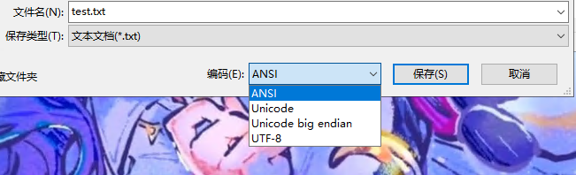
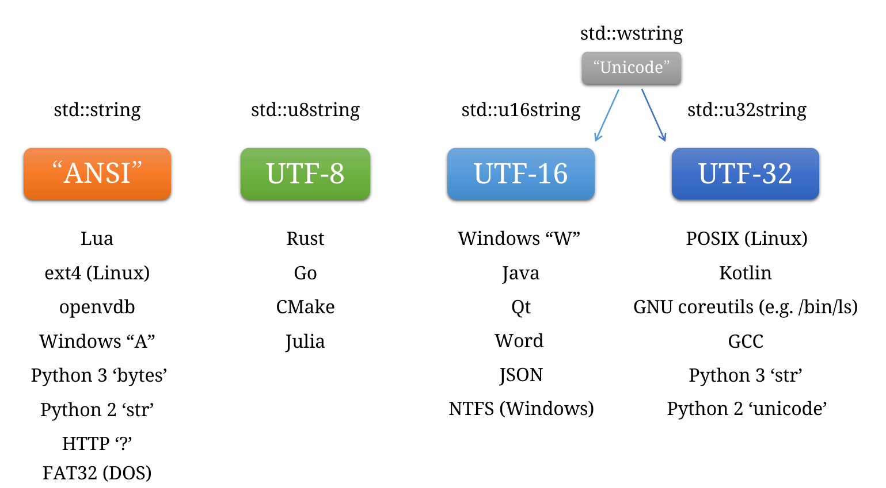
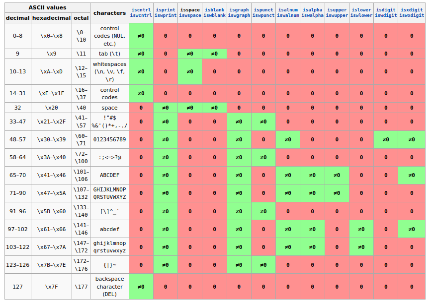

字符编码那些事
字符集
计算机不能直接存储字符，而是用数字来代替，这就是字符集，为每个字符指定一个数字。
ASCII
ASCII 为英文字母、阿拉伯数组、标点符号等 128 个字符，每个都用一个 0 到 127 范围内的数字对应。
如果你想要表示一个字符，就在这个表里寻找到相应的数字编号，然后存这个编号即可。

例如下面的一串数字：
80 101 110 103
在 ASCII 表中查找，发现这些数字分别对应 P、e、n、g 四个字母，连起来就还原得到了原本的字符串“Peng”。
Latin-1
Latin-1 扩充了 ASCII 字符集，保持 ASCII 原有 0 到 127 的部分映射不变，额外追加了 128 到 255 的映射关系。因此也被称为 EASCII（扩展 ASCII）。

Unicode
Unicode 字符集为全世界的所有字符都对应了一个整数。
| 字符 | 编号 |
|---|---|
| 我 | 25105 |
| 戒 | 25106 |
| 戓 | 25107 |
| 戔 | 25108 |
| 戕 | 25109 |
| 或 | 25110 |
| 戗 | 25111 |
| 战 | 25112 |
| 戙 | 25113 |
| 戚 | 25114 |
出于历史兼容性考虑，Unicode 在 0 到 256 区间内的映射和 ASCII、Latin-1 是完全相同的。
| 字符 | 编号 |
|---|---|
| P | 80 |
| e | 101 |
| n | 110 |
| g | 103 |
Unicode 经过了许多版本的发展，早期的 Unicode 只收录了 65536 (0x10000) 个字符，后来扩充到了 1114112 (0x110000) 个字符。
总之，现在 Unicode 字符映射的整数范围是 0x0 到 0x10FFFF。
虽然占用了 1114112 这多格码点空间，不过其中很多都是空号，留待未来扩充使用。
Unicode 字符映射表可以在网上找到：
- https://symbl.cc/en/unicode-table/
- https://www.compart.com/en/unicode/
总结
- 字符集: 从字符到整数的一一映射。
- ASCII: 只收录了英文字母、阿拉伯数字、标点符号的字符集。
- Latin-1: 在 ASCII 基础上追加了注音字母，满足欧洲用户需要。
- Unicode: 收录了全世界所有文字和符号的字符集。
计算机存储字符时，实际上是存储了那个对应的整数。
这些整数就被称为 码点 (code point)，每个字符对应一个码点。
不过，程序员通常喜欢用十六进制书写数字：
| 字符 | 编号 |
|---|---|
| 我 | 0x6211 |
| 戒 | 0x6212 |
| 戓 | 0x6213 |
| 戔 | 0x6214 |
| 戕 | 0x6215 |
| 或 | 0x6216 |
| 戗 | 0x6217 |
| 战 | 0x6218 |
| 戙 | 0x6219 |
| 戚 | 0x621A |
例如“我”这个字，在 Unicode 表中编号为 0x6211。于是当计算机需要表示“我”这个字符时，就用 0x6211 这个整数代替。
如果要表示多个字符，那就用一个整数的数组吧！
例如当计算机要处理“我爱𰻞𰻞面!”这段文字，就可以用：
0x6211 0x7231 0x30EDE 0x30EDE 0x9762 0x21
这一串数字代替。
sudo apt-get install -y fonts-noto-cjk
“𰻞(biáng)𰻞(biáng)面”是流行于中国陕西关中地区的一种知名传统风味面食，属于扯面，通过揉、抻、甩、扯等步骤制作，面宽而厚，犹如“裤腰带”，口感劲道，食用前加入各色臊子或油泼辣子。但是，小彭老师其实并没有吃过，只是因为稀有字体看起来比较好玩。
字符编码
Unicode 只是指定了整数，没有规定整数如何在内存中存在。
- 字符编码: 将字符的整数编号序列化为计算机可直接存储的一个或多个实际存在的整数类型。
Unicode 字符可以选用以下这些字符编码来序列化：
- UTF-32: 每个 Unicode 字符用 1 个
uint32_t整数存储。 - UTF-16: 每个 Unicode 字符用 1 至 2 个
uint16_t整数存储。 - UTF-8: 每个 Unicode 字符用 1 至 4 个
uint8_t整数存储。
翻译出来的这些小整数叫 码位 (code unit)。例如对于 UTF-8 而言，每个 uint8_t 就是他的码位。
UTF-32
Unicode 字符映射的整数范围是 0x0 到 0x10FFFF。
最大值 0x10FFFF 有 21 个二进制位，C 语言中 uint32_t 能容纳 32 个二进制位，所以最简单的方法是直接用 uint32_t 数组来一个个容纳 Unicode 字符码点。虽然浪费了 11 位，但至少所有 Unicode 字符都能安全容纳。
例如当计算机要存储“我爱𰻞𰻞面!”这段文字，就可以用：
std::vector<uint32_t> s = {
0x00006211, // 我
0x00007231, // 爱
0x00030EDE, // 𰻞
0x00030EDE, // 𰻞
0x00009762, // 面
0x00000021, // !
};
这个数组表示。
UTF-32 中，一个码点固定对应一个码位，所以说 UTF-32 是定长编码。定长编码的优点是：
- 数组的长度，就是字符串中实际字符的个数。
- 要取出单个字符，可以直接用数组的索引操作。
- 无论对数组如何切片，都不会把一个独立的字符破坏。
- 反转数组，就可以把字符串反转，不会产生破坏字符的问题。
缺点是：
- 浪费存储空间。
定长编码很方便，我们推荐在计算机内存中，统一采用 UTF-32 形式处理文字。
UTF-8
UTF-32 虽然方便了文字处理，然而，却浪费了大量的存储空间，不利于文字存储！一个字符，无论他是常用还是不常用，都要霸占 4 个字节的空间。
Unicode 编码字符时，特意把常用的字符靠前排列了。
世界上常用语言文字都被刻意编码在了 0 到 0xFFFF 区间内，超过 0x10000 的基本都是不常用的字符，例如甲骨文、埃及象形文字、Emoji 等，很多都是已经无人使用的古代文字和生僻字，例如“𰻞”。仅仅是为了这些偶尔使用的罕见文字，就要求所有文字都用同样的 4 字节宽度存储，实在是有点浪费。
在 0 到 0xFFFF 区间内，同样有按照常用度排序：
- 0 到 0x7F 是（欧美用户）最常用的英文字母、阿拉伯数字、半角标点。
- 0x80 到 0x7FF 是表音文字区，常用的注音字母、拉丁字母、希腊字母、西里尔字母、希伯来字母等。
- 0x800 到 0xFFFF 是表意文字，简繁中文、日文、韩文、泰文、马来文、阿拉伯文等。
- 0x10000 到 0x10FFFF 是不常用的稀有字符，例如甲骨文、埃及象形文字、Emoji 等。
UTF-8 就是为了解决压缩问题而诞生的。
UTF-8 把一个码点序列化为一个或多个码位，一个码位用 1 至 4 个 uint8_t 整数表示。
- 0 到 0x7F 范围内的字符，用 1 个字节表示。
- 0x80 到 0x7FF 范围内的字符，用 2 个字节表示。
- 0x800 到 0xFFFF 范围内的字符，用 3 个字节表示。
- 0x10000 到 0x10FFFF 范围内的字符，用 4 个字节表示。
序列化规则如下：
兼容 ASCII
对于 0 到 0x7F 的字符，这个范围的字符需要 7 位存储。
我们选择直接存储其值。
例如 ‘P’ 会被直接存储其 Unicode 值的 80（0x50）：
01010000
由于 Unicode 在 0 到 0x7F 范围内与 ASCII 表相同，而 UTF-8 又把 0 到 0x7F 的值直接存储，所以说 UTF-8 兼容 ASCII。这使得原本设计于处理 ASCII 的 C 语言函数，例如 strlen、strcat、sprintf 等，都可以直接无缝切换到 UTF-8。反之亦然，任何设计用于 UTF-8 的程序都可以完全接受 ASCII 格式的输入文本。
但部分涉及字符长度的函数会有些许不兼容，例如 strlen 求出的长度会变成字节的数量而不是字符的数量了，例如
strlen("我们")会得到 6 而不是 2，稍后讲解。
解码规则
UTF-8 的构造就像一列小火车一样，不同范围内的码位会被编码成不同长度的列车，但他们都有一个车头。
根据火车头的“等级”，我们可以推断出后面拉着几节车厢。
火车头是什么等级由他的二进制前缀决定：
- 如果是
0开头，就说明是单独一台火车头，后面没有车厢了，这表示车头里面直接装着 0 到 0x7F 范围的普通 ASCII 字符。 - 如果是
110开头，就说明后面拖着一节车厢，里面装着 0x80 到 0x7FF 范围内的欧洲字符。 - 如果是
1110开头，就说明后面拖着两节车厢，里面装着 0x800 到 0xFFFF 范围内的世界常用字符。 - 如果是
11110开头，就说明后面拖着三节车厢，里面装着 0x10000 到 0x10FFFF 范围内的生僻字符。 - 如果是
10开头，就说明这是一节车厢，车厢不会单独出现，只会跟在火车头屁股后面。如果你看到一节单独的车厢在前面无头驾驶，就说明出错了。
例如下面这一串二进制：
11100110 10000010 10000001
首先，看到第一个字节，是 1110 开头的三级车头！说明后面还有两节车厢是属于他的。火车头中 4 位用于表示车头等级了，剩下还有 4 位用于装乘客。
车厢也有固定的前缀，所有的车厢都必须是 10 开头的。去除这开头的 2 位，剩下的 6 位就是乘客。
对于这种三级列车，4 + 6 + 6 总共 16 位二进制，刚好可以装得下 0xFFFF 内的乘客。
0110 000010 000001
编码时则是反过来。
乘客需要被拆分成三片，例如对于“我”这个乘客，“我”的码点是 0x6211，转换成二进制是：
110010000010001
把乘客切分成高 4 位、中 6 位和低 6 位：
1100 100000 10001
加上 1110、10 和 10 前缀后，形成一列火车：
11100110 10000010 10000001
这样，我们就把“我”这个字符，编码成了三节列车，塞进字节流的网络隧道里了。
总结：
- 前缀是 0 的火车头：火车头直接载客 7 名。
- 前缀是 10 的是车厢：车厢不会单独出现，只会跟在火车头屁股后面。
- 前缀是 110 的火车头：火车头直接载客 5 名 + 1 节车厢载客 6 名 = 共 11 名。
- 前缀是 1110 的火车头：火车头直接载客 4 名 + 2 节车厢各载客 6 名 = 共 16 名。
- 前缀是 11110 的火车头：火车头直接载客 3 名 + 3 节车厢各载客 6 名 = 共 21 名。
UTF-8 的抗干扰能力
如果发现 10 开头的独立车厢，就说明出问题了，可能是火车被错误拦腰截断，也可能是字符串被错误地反转。因为 10 只可能是火车车厢，不可能出现在火车头部。此时解码器应产生一个报错，或者用错误字符“�”替换。
10000010 10000001
mbstate_t就是这种状态机，稍后讲解。
除此之外，如果检测到一个三级火车头，却发现里面装着 0x394 (“Δ”)，这是一个用二级火车头就能装下的欧洲字符，却用了三级火车头装，说明装箱那边的人偷懒滥用资源了！这种情况下 UTF-8 解码器也要产生一个报错，因为 UTF-8 要保证编码的唯一性，0x394 是 0x7F 到 0x7FF 范围的，就应该用二级火车头装。
以及，如果发现 11111 开头的五级火车头，也要报错，因为 UTF-8 最多只支持四级火车头。
如果检测到一个四级火车头拆开后的字符范围超过了 0x10FFFF，这超出了 Unicode 的范围，也要产生一个报错。如果一个三级火车头拆开后发现字符范围处在保留区 0xD800 到 0xDFFF 内，这是 Unicode 承诺永不加入字符的区间（稍后讲解 UTF-16 时会解释为什么），也要报错。总之 Unicode 码点的合法范围是 0x0 到 0xD7FF，0xE000 到 0x10FFFF。
总之，UTF-8 具有一定的冗余和自纠错能力，如果传输过程中出现差错，可能会爆出错误字符“�”。这个特殊字符是 Unicode 官方规定的，码点为 0xFFFD，出现他就意味着 UTF-8 解码失败了。
“我爱𰻞𰻞面!”
例如当计算机要以 UTF-8 格式存储“我爱𰻞𰻞面!”这段文字：
std::vector<uint8_t> s = {
0xE6, 0x88, 0x91, // 我，需要三级列车
0xE7, 0x88, 0xB1, // 爱，需要三级列车
0xF0, 0xB0, 0xAF, 0x9B, // 𰻞，需要四级列车
0xF0, 0xB0, 0xAF, 0x9B, // 𰻞，需要四级列车
0xE9, 0x9D, 0xA2, // 面，需要三级列车
0x21, // !，这是个 ASCII 范围的字符，直接用单个火车头装
};
UTF-8 中，一个码点可能对应多个码位，所以说 UTF-8 是一种变长编码。变长编码的缺点是：
- 数组的长度，不一定是字符串中实际字符的个数。因此，要取出单个字符，需要遍历数组，逐个解析码位。
- 数组的单个元素索引，无法保证取出一个完整的字符。
- 对数组的切片，可能会把一个独立的字符切坏。
- 反转数组，不一定能把字符串的反转，因为可能不慎把一个字符的多个码位反转，导致字符破坏。
优点是：
- 节约存储空间。
我们推荐只在网络通信、硬盘存储时，采用 UTF-8 形式存储文字。
总结：UTF-8 适合存储，UTF-32 适合处理。
我们建议计算机从硬盘或网络中读出 UTF-8 字符串后，立即将其转换为 UTF-32，以方便后续文字处理。当需要写入硬盘或网络时，再转换回 UTF-8，避免硬盘容量和网络带宽的浪费。
计算机需要外码和内码两种：
- 外码=硬盘中的文本=UTF-32
- 内码=内存中的文本=UTF-8
UTF-16
UTF-16 的策略是：既然大多数常用字符的码点都在 0x0 到 0xFFFF 内，用 uint32_t 来存储也太浪费了。他的方案如下：
对于 0x0 到 0xFFFF 范围内的字符，就用一个 uint16_t 直接存。
对于 0xFFFF 到 0x10FFFF 范围的稀有字符，反正不常见，就拆成两个 uint16_t 存。这个拆的方案很有讲究，如果只是普通的拆，由于解码时收到的是个没头没尾的字节序列，无法分辨这到底是两个 uint16_t 的稀有字符，还是一个 uint16_t 的普通字符。
例如，我们把一个稀有字符“𰻞”，0x30EDE。拆成两个 uint16_t，得到 0x3 和 0x0EDE。如果直接存储这两个 uint16_t：
0x0003 0x0EDE
之后解码时，先读到 0x0003，还会以为他是单独的一个 uint16_t，表示 3 号字符“”。后面的 0x0EDE 就变成了一个单独的 0x0EDE，变成了 0x0EDE 号字符 “ໞ”。这样一来，“𰻞”就变成了两个毫不相干的字符，“ໞ”了。
为了避免与普通字符产生歧义，两个 uint16_t 需要采用一种特殊的方式以示区分。让解码器一看到，就能确定这两个 uint16_t 需要组装成同一个字符。
这就用到了一个“漏洞”：Unicode 并没有把码点分配的满满当当，或许是出于先见之明，在 0xD800 到 0xDFFF 之间预留了一大段空号：

UTF-16 就是利用了这一段空间，他规定：0xD800 到 0xDFFF 之间的码点将永远不用来表示字符，而是作为代理对 (surrogate-pair)。其中 0xD800 到 0xDBFF 是高位代理 (high surrogate)，0xDC00 到 0xDFFF 是低位代理 (low surrogate)。高代理在前，低代理在后。
一个超过 0xFFFF 的稀有字符，会被拆成两段，一段放在高位代理里，一段放在低位代理里，一前一后放入 uint16_t 序列中。
具体拆分方法如下：
对于 0xFFFF 到 0x10FFFF 范围的码点，首先将其值减去 0x10000，变成一个范围 0x0 到 0xFFFFF 范围内的数字，这能保证他们只需 20 个二进制位即可表示。
例如“𰻞”对应的码点 0x30EDE，减去后就变成 0x20EDE。
然后，写出 0x20EDE 的二进制表示：
00100000111011011110
总共 20 位，我们将其拆成高低各 10 位：
0010000011 1011011110
各自写出相应的十六进制数：
0x083 0x2DE
因为最多只有 10 位，这两个数都会在 0 到 0x3FF 的范围内。
而 0xD800 到 0xDBFF，和 0xDC00 到 0xDFFF 预留的空间，刚好可以分别容纳 0x400 个数！
所以，我们将拆分出来的两个 10 位数，分别加上 0xD800 和 0xDC00：
0xD800+0x083=0xD883
0xDC00+0x2DE=0xDFDE
这两个数，必定是 0xD800 到 0xDBFF，和 0xDC00 到 0xDFFF 范围内的数。而这两个范围都是 Unicode 委员会预留的代理对区间，绝对没有普通字符。所以，生成的两个代理对不会与普通字符产生歧义，可以放心放进 uint16_t 数组，解码器如果检测到代理对，就说明是两节车厢，可以放心连续读取两个 uint16_t。
所以，0xD883 0xDFDE 就是“𰻞”用 UTF-16 编码后的结果。
代理字符不是一个完整的字符，当解码器检测到一个 0xD800 到 0xDBFF 范围内的高代理时，就预示着还需要再读取一个低代理，才能拼接成一个稀有字符。
如果接下来读到的不是 0xDC00 到 0xDFFF 范围的低代理字符，而是普通字符的话，那就说明出错了，可能是中间被人丢包了，需要报错或者用错误字符“�”顶替。
另外，如果读到了一个单独存在的 0xD800 到 0xDFFF 范围内的低代理字符，那也说明出错了，因为代理字符只有成对出现才有意义，低代理字符不可能单独在开头出现。
可见，UTF-16 和 UTF-8 一样，都是“小火车”式的变长编码，UTF-16 同样也有着类似于 UTF-8 的抗干扰机制。
字节序问题，大小端之争
在计算机中，多字节的整数类型（如 uint16_t 和 uint32_t）需要被拆成多个字节来存储。拆开后的高位和低位按什么顺序存入内存？不同的硬件架构产生了争执：
- 大端派 (bit endian)：低地址存放整数的高位，高地址存放整数的低位，也就是大数靠前！这样数值的高位和低位和人类的书写习惯一致。例如，0x12345678，在内存中就是：
0x12 0x34 0x56 0x78
- 小端派 (little endian)：低地址存放整数的低位，高地址存放整数的高位，也就是小数靠前！这样数值的高位和低位和计算机电路的计算习惯一致。例如，0x12345678，在内存中就是：
0x78 0x56 0x34 0x12
例如，Intel 的 x86 架构和 ARM 公司的 ARM 架构都是小端派，而 Motorola 公司的 68k 架构和 Sun 公司的 SPARC 架构都是大端派。
在网络通信时，发消息和收消息的可能是不同的架构，如果发消息的是小端架构，收消息的是大端架构，那么发出去的是 0x12345678，收到的就会变成 0x78563421 了。
因此互联网一般规定，所有多字节的数据在网络包中统一采用大端。对于大端架构，他们什么都不需要做，对于小端架构，在发包前需要把自己的小端数据做字节序反转，变成大端的以后，再发送。之后的网络专题课中我们会详解这一块。
基于字节码的虚拟机语言通常会规定一个字节序：像 Java 这种面向互联网语言，索性也规定了统一采用大端，无论 JVM 运行在大端机器还是小端机器上。这使得他与互联网通信比较方便，而在 x86 和 ARM 架构上，与本地只接受小端数据的 API，例如 OpenGL，沟通较为困难，需要做额外的字节序转换。而 C# 主打游戏业务（例如 Unity），需要考虑性能，所以规定全部采用小端。作为底层编程语言的 C++ 则是入乡随俗，你的硬件是什么端，他就是什么端，不主动做任何额外的转换。
UTF-16 和 UTF-32 的码位都是多字节的，也会有大小端问题。例如，UTF-16 中的 uint16_t 序列：
0x1234 0x5678
在大端派的机器中，就是：
0x12 0x34 0x56 0x78
在小端派的机器中，就是：
0x34 0x12 0x78 0x56
这样一来，UTF-16 和 UTF-32 的字节流，在不同的机器上，可能会有不同的顺序。这给跨平台的文本处理带来了麻烦。
所以当你需要把 UTF-16 存入硬盘和在网络发送时，还需要额外指明你用的是大端的 UTF-16 还是小端的 UTF-16。
因此 UTF-16 和 UTF-32 进一步分裂为：
- UTF-16LE：小端的 UTF-16
- UTF-16BE：大端的 UTF-16
- UTF-32LE：小端的 UTF-32
- UTF-32BE：大端的 UTF-32
如果只在内存的 wchar_t 中使用就不用区分，默认跟随当前机器的大小端。所以 UTF-16 和 UTF-32 通常只会出现在内存中用于快速处理和计算，很少用在存储和通信中。
UTF-8 是基于单字节的码位，火车头的顺序也有严格规定，火车头总是在最前，根本不受字节序大小端影响，也就没有影响。
由于压缩率低，又存在大小端字节序不同的问题。而互联网数据需要保证相同的大小端，在收发包时需要额外转换，因而可能不太适合网络。而 UTF-8 的存储单位是字节，天生没有大小端困扰。更妙的是，他且完全兼容 ASCII，而互联网又是古董中间件最多的地方……
总之，完全基于字节的 UTF-8 是最适合网络通信和硬盘存储的文本编码格式，而 UTF-32 是最适合在内存中处理的格式。
BOM 标记
0xFEFF 是一个特殊的不可见字符“”，这是一个零宽空格，没有任何效果。
你可以把这个字符加在文本文件的头部，告诉读取该文件的软件，这个文件是用什么编码的。
如果是 UTF-16 和 UTF-32，因为 0xFEFF 不对称，他还能告诉你是大端还是小端。因此 0xFEFF 被称为字节序标志（Byte-order-mark，BOM）。
如果读取该文件的软件不支持解析 BOM，那么他照常读出 0xFEFF，一个零宽空格，在文本中不显示，不影响视觉结果。
0xFEFF 在不同的编码下会产生不同的结果：
- UTF-8：
0xEF 0xBB 0xBF，他会占用 3 字节，而且不会告诉你是大端还是小端，因为 UTF-8 是没有大小端问题的。 - UTF-16：如果是大端，就是
0xFE 0xFF，如果是小端，就是0xFF 0xFE。 - UTF-32：如果是大端，就是
0x00 0x00 0xFE 0xFF，如果是小端，就是0xFF 0xFE 0x00 0x00。
因此，在文本头部加上 BOM 有助于软件推测该文件是什么编码的（如果那软件支持解析 BOM 的话）。
0xEF 0xBB 0xBF，就明白这是一个 UTF-8 编码的文件。这样，MSVC 就能正确地处理中文字符串常量了。如果 MSVC 没看到 BOM，会默认以为是 ANSI（GBK）编码的，从而中文字符串常量会乱码。开启/utf-8选项也能让 MSVC 把没有 BOM 的源码文件当作 UTF-8 来解析，适合跨平台宝宝体质。
A函数。不过，这会导致你运行其他假定了 GBK 的中国特供程序乱码，也会导致你的毕业答辩导师发来的 ZIP 变成乱码。而且我们作为客户端的开发者，我们总不能强求所有客户用我们的软件前，改变他们的控制面板来适应我们的程序吧？所以还是需要绕开 GBK，直接调用 UTF-16 的W类 API。
C/C++ 中的字符编码
字符类型
| 类型 | 大小 | 编码 | 字面量 |
|---|---|---|---|
Linux char |
1 字节 | 取决于 $LC_ALL |
“hello” |
Windows char |
1 字节 | 取决于系统区域设置 | “hello” |
Linux wchar_t |
4 字节 | UTF-32 | L”hello” |
Windows wchar_t |
2 字节 | UTF-16 | L”hello” |
char8_t |
1 字节 | UTF-8 | u8”hello” |
char16_t |
2 字节 | UTF-16 | u”hello” |
char32_t |
4 字节 | UTF-32 | U”hello” |
由此可见，char 和 wchar_t 是不跨平台的。
对于中国区 Windows 来说，区域设置默认是 GBK。对于美国区 Windows 来说，区域设置默认是 UTF-8。
对于 Linux 用户来说，如果你没有专门修改过，$LC_ALL 默认是 en_US.UTF-8 或 C.UTF-8。
这带来了巨大的混淆！很多美国程序员潜意识里会想当然地把 char 当作 UTF-8 来用。很多开源项目，第三方库，甚至很多国人做的项目，都被这种“想当然”传染了。
strlen，换行符'\n'，路径分隔符'/'和'\\'冲突了。
wchar_t 就好一些，虽然在 Windows 系统上是糟糕的 UTF-16，但至少稳定了，不会随着系统区域设置而随意改变，只要你不打算跨平台，wchar_t 就是 Windows 程序的标配。
思考：UTF-8 为什么完美兼容 ASCII
UTF-8 的火车头和车厢，都是 1 开头的，而 ASCII 的单体火车头永远是 0 开头。这很重要，不仅火车头需要和 ASCII 区分开来，车厢也需要。考虑这样一个场景：
std::u32string path = "一个老伯.txt";
“一个老伯” 转换为 Unicode 码点分别是：
0x4E00 0x4E2A 0x8001 0x4F2F
如果让他们原封不动直接存储进 char 数组里：
0x4E 0x00 0x4E 0x2A 0x80 0x01 0x4F 0x2F
就出问题了！首先，这里 0x4E00 的 0x00 部分，会被 C 语言当作是字符串的结尾。如果拿这样的字符串去调用操作系统的 open 函数，他会以为你在打开 0x4E 单个字符的文件名，也就是 "N"。
更糟糕的是，0x2F 对应的 ASCII 字符是 '/'，是路径分隔符。操作系统会以为你要创建一个子文件夹下的文件 "N\x00N*\x80\x01O/.txt"，文件夹名字叫 "N\x00N*\x80\x01O" 而文件叫 ".txt"。
为了能让针对 ASCII 设计的操作系统 API 支持中文文件名，就只能绕开所有 0x7F 以下的值。这就是为什么 UTF-8 对车厢也全部抬高到 0x80 以上，避免操作系统不慎把车厢当作是 '/' 或 '\0'。
UTF-8 确实几乎完美支持字符串所有操作
由于巨大的惯性，很多人都想当然的把 std::string 当作 UTF-8 来使用。对于简单的打印，常规的字符串操作，是没问题的。
字符串操作有下面这几种，得益于 UTF-8 优秀的序列化涉及和冗余抗干扰机制，绝大多数 ASCII 支持的操作，UTF-8 字符串都能轻松胜任，唯独其中涉及“索引”和“长度”的一部分操作不行。这是由于变长编码的固有缺陷，如果需要做“索引”类操作，还是建议先转换成定长的 UTF-32 编码。
| 操作 | UTF-8 | UTF-32 | GBK |
|---|---|---|---|
| 求字符串长度 | × | √ | × |
| 判断相等 | √ | √ | √ |
| 字典序的大小比较 | √ | √ | × |
| 字符串拼接 | √ | √ | √ |
| 搜索子字符串 | √ | √ | × |
| 搜索单个字符 | × | √ | × |
| 按索引切下子字符串 | × | √ | × |
| 按索引获取单个字符 | × | √ | × |
| 遍历所有字符 | × | √ | × |
| 按子字符串切片 | √ | √ | × |
| 按索引切片 | × | √ | × |
| 查找并替换子字符串 | √ | √ | × |
| 查找并删除子字符串 | √ | √ | × |
| 按索引删除子字符串 | × | √ | × |
| 删除单个字符 | × | √ | × |
为什么？我们来看一个实验：
std::string s = "你好";
fmt::println("s 的长度：{}", s.size());
（使用 /utf-8 编译）运行后，会得到 6。
因为 std::string 的 size() 返回的是 char 的数量，而不是真正字符的数量。在 UTF-8 中，一个非 ASCII 的字符会被编码为多个 char，对于中文而言，中文都在 0x2E80 到 0x9FFF 范围内，属于三级列车，也就是每个汉字会被编码成 3 个 char。
char 是字节（码位）而不是真正的字符（码点）。真正的 Unicode 字符应该是 char32_t 类型的。调用 std::string 的 size() 或者 strlen 得到的只是“字节数量”。
而 UTF-32 中，每个字符（码点）都对应一个独立的 char32_t（码位），size() 就是真正的“字符数量”，这就是定长编码的优势。
std::u32string s = U"你好";
fmt::println("s 的长度：{}", s.size());
如果你的操作只涉及字符串查拼接与查找，那就可以用 UTF-8。如果大量涉及索引，切片，单个字符的操作，那就必须用 UTF-32（否则一遇到汉字就会出错）。
std::vector<std::string> slogan = {
"小彭老师公开课万岁", "全世界程序员大团结万岁",
};
std::string joined;
for (auto const &s: slogan) {
joined += s; // 只是拼接而已，UTF-8 没问题
}
UTF-8 按索引切片的出错案例：
std::string s = "小彭老师公开课万岁";
fmt::println("UTF-8 下，前四个字节：{}", s.substr(0, 4));
// 会打印 “小�”
std::u32string s = U"小彭老师公开课万岁";
fmt::println("UTF-32 下，前四个字符：{}", s.substr(0, 4));
// 会打印 “小彭老师”
只有当索引来自 find 的结果时，UTF-8 字符串的切片才能正常工作：
std::string s = "小彭老师公开课万岁";
size_t pos = s.find("公"); // pos = 12
fmt::println("UTF-8 下，“公”前的所有字节：{}", s.substr(0, pos));
// 会打印 “小彭老师”
std::u32string s = U"小彭老师公开课万岁";
size_t pos = s.find(U'公'); // pos = 4
fmt::println("UTF-32 下，“公”前的所有字符：{}", s.substr(0, pos));
// 会打印 “小彭老师”
"公"需要是字符串，而不是单个字符。
UTF-8 无法取出单个非 ASCII 字符，对于单个中文字符，仍然只能以字符串形式表达（由多个字节组成）。
std::string s = "小彭老师公开课万岁";
fmt::print("UTF-8 下第一个字节：{}", s[0]);
// 可能会打印 ‘å’ (0xE5)，因为“小”的 UTF-8 编码是 0xE5 0xB0 0x8F
// 也可能是乱码“�”，取决于终端理解的编码格式
std::u32string s = U"小彭老师公开课万岁";
fmt::print("UTF-32 下第一个字符：{}", s[0]);
// 会打印 ‘小’
UTF-8 字符串的反转也会出问题：
std::string s = "小彭老师公开课万岁";
strrev(s.data()); // 会以字节为单位反转，导致乱码
std::u32string s = U"小彭老师公开课万岁";
strrev(s.data()); // 会把按字符正常反转，得到 “岁万课开公师老彭小”
总结：UTF-8 只能拼接、查找、打印。不能索引、切片、反转。
轶事：“ANSI” 与 “Unicode” 是什么
在 Windows 官方的说辞中，有“Unicode 编码”和“ANSI 编码”的说法。当你使用 Windows 自带的记事本程序，保存文本文件时，就会看到这样的选单：

翻译一下：
- “ANSI”指的是“区域设置”里设置的那个编码格式。
- 所谓“Unicode”其实指的是 UTF-16。
- 所谓“Unicode big endian”指的是大端 UTF-16。
- “UTF-8”指的是 UTF-8 with BOM 而不是正常的 UTF-8。
实际上 Unicode 只是一个字符集，只是把字符映射到整数，更没有什么大端小端，UTF-16 才是编码格式。
而 ANSI 本来应该是 ASCII 的意思，char 本来就只支持 ASCII。
但由于当时各国迫切需要支持自己本国的文字，就在兼容 ASCII 的基础上，发展出了自己的字符集和字符编码。这些当地特供的字符集里只包含了本国文字，所有这些各国的字符编码也都和 UTF-8 类似，采用火车头式的变长编码，对 0 开头的 ASCII 部分也都是兼容。所以 Windows 索性把 ANSI 当作“各国本地文字编码”的简称了。但后来互联网的出现，“区域设置”带来了巨大的信息交换困难。
这种情况下，Unicode 组织出现了，他的使命就是统一全世界的字符集，保证全世界所有的文字都能在全世界所有的计算机上显示出来。首先创办了 Unicode 字符集，然后规定了 UTF-8、UTF-16、UTF-32 三种字符编码，最终 UTF-8 成为外码的主流，UTF-32 成为内码的主流。
接下来为了方便记忆，我们索性就顺着微软的这个说法：
- 管
char叫 ANSI：随“区域设置”而变。 - 管
wchar_t叫 Unicode：在 Windows 上是 UTF-16，在 Linux 上是 UTF-32。
小笑话：UTF-16 的背刺
微软管 UTF-16 叫 Unicode 是纯粹的历史遗留问题：
因为当年 Unicode 5.0 的时候只有 0 到 0xFFFF 的字符，16 位就装得下，所以当时 UTF-16 还是一个定长编码。微软于是决定把 wchar_t 定义成 2 字节，并在 NT 内核中，为每个系统调用都升级成了基于 wchar_t 字符串的 “W 系” API。
比尔盖子当时以为这样 UTF-16 定长内码就一劳永逸了，并号召所有程序都改用 UTF-16 做内码，别用 “A 系” API 了。
没想到后来 Unicode 委员会“背刺”了比尔盖子！偷偷把范围更新到了 0x10FFFF，突破了 16 位整数的容量。原来的 UTF-16 已经容纳不下，只好利用之前预留的 0xD800 到 0xDFFF 空号区间丑陋地实现了变长编码。
闹了半天，Windows 费心费力替 Unicode 委员会好不容易推广的 wchar_t，既没有 UTF-8 兼容 ASCII 的好处，又没有 UTF-32 定长编码的好处。可 “W 系” API 却又焊死在了 NT 内核最底层，反复来坑第一次用 Windows 编程的初学者。
除 Windows 外，Java 也是“UTF-16 背刺”的受害者，他们想当然的把 char 定义为 UTF-16，以为这就是未来永久的定长内码，一劳永逸…… 直到 Unicode 加入了 0x10FFFF，Java 不得不重新定义了个 Character 作为 UTF-32 字符，还弄个 char 到 Character 的转换，好不尴尬！
wchar_t定义成 4 字节，逃过了 UTF-16 的背刺。
总之，UTF-16 是糟粕，但他是 Windows 唯一完整支持的 Unicode 接口。不建议软件内部用 UTF-16 存储文字，你可以用更紧凑的 UTF-8 或更方便切片的 UTF-32，只需在调用操作系统 API 前临时转换成 UTF-16 就行。
强类型的 std::u8string 只是君子协议
必须指出：在 std::string 中装 UTF-8 并不是未定义行为，在 std::u8string 里同样可以装 GBK。这就好比一个名叫 Age 的枚举类型，实际却装着性别一样。
enum Age { // 错误示范
Male,
Female,
Custom,
};
// 除了迷惑同事外，把年龄和性别的类型混用没有好处
void registerStudent(Age age, Age sex);
区分类型只是大多数人设计接口的规范，只是方便你通过看函数接口一眼区分这个函数接受的是什么格式的字符串，并没有强制性。例如下面这段代码一看就知道这些函数需要的是什么编码的字符串。
void thisFuncAcceptsANSI(std::string msg);
void thisFuncAcceptsUTF8(std::u8string msg);
void thisFuncAcceptsUTF16(std::u16string msg);
void thisFuncAcceptsUnicode(std::wstring msg);
void thisFuncAcceptsUTF32(std::u32string msg);
没有 char8_t 之前，用类型别名同样可以起到差不多的说明效果（缺点是无法重载）：
using ANSIString = std::string;
using UTF8String = std::string;
using UTF16String = std::vector<uint16_t>;
void thisFuncAcceptsANSI(ANSIString msg);
void thisFuncAcceptsUTF8(UTF8String msg);
void thisFuncAcceptsUTF16(UTF16String msg);
之所以我会说，std::string 应该装 ANSI 字符串，是因为所有标准库官方提供的函数，都会假定 std::string 类型是 ANSI 编码格式（GBK）。并不是说，你不能用 std::string 存其他编码格式的内容。
如果你就是想用 std::string 装 UTF-8 也可以，只不过你要注意在传入所有使用了文件路径的函数，如 fopen，std::ifstream 的构造函数前，需要做一个转换，转成 GBK 的 std::string 或 UTF-16 的 std::wstring 后，才能使用，很容易忘记。
而如果你始终用 std::u8string 装 UTF-8，那么当你把它输入一个接受 ANSI 的普通 std::string 参数时，就会发生类型不匹配错误，强迫你重新清醒，或是强迫你使用一个转换函数，稍后会介绍这个转换函数的写法。
例如当你使用 std::cout << u8string 时会报错，迫使你改为 std::cout << u8toansi(u8string) 才能编译通过，从而避免了把 UTF-8 的字符串打印到了只支持 GBK 的控制台上。
std::string u8toansi(std::u8string s)，很可惜，标准库并没有提供这个函数，直到 C++26 前，标准库对字符编码支持一直很差，你不得不自己实现或依赖第三方库。
总之，char8_t 是 C++20 引入的新字符类型，用于强类型的君子协议，和 char 并没有实际区别。只是方便了函数类型签名更加一目了然，向调用者暗示这个参数只能接受 UTF-8 编码的字符串。
例如这样一个函数：
thisFuncAcceptUTF8(std::u8string msg);
如果调用者喜欢用 std::string 装 UTF-8 字符串，可以用：
std::string msg;
// 调用者确信，这个 msg 虽然是 `std::string`，但里面的内容就是 UTF-8
// 那么他可以强制转换为 u8string，来证明自己头脑清醒
thisFuncAcceptUTF8(std::u8string((char8_t *)msg.data(), msg.size()));
源码字符集与运行字符集
C++ 官方定义中，存在两种字符集。一种是 源码字符集 (source charset)，一种是 运行字符集 (execution charset)。
- 这真是糟糕的术语，运行字符集这个名字具有误导性，他和运行时根本没有关系，明明是编译期就确定的。所以小彭老师替他改个名字，实际应该叫“字面量字符集”。
- 而且他们叫字符集也不合理，应该叫字符编码才对，UTF-8 和 UTF-16 都是 Unicode 字符集的两种字符编码格式，但他们明显是不同的。
- 然后，再引入一个真正的，运行时的字符编码，也就是软件客户电脑的区域设置。
最终，经过小彭老师改良的术语如下：
- 源码字符编码:
.cpp源码文件时用的字符编码。例如程序员用记事本保存.cpp源码文件时，选择 “UTF-8” 保存就是 UTF-8，选择 “ANSI” 保存就是 GBK。 - 字面量字符编码: 指的是
char字符串常量在内存中存储的字符编码。默认是我们程序员（开发者）电脑的“区域设置”。 - 运行时字符编码: 指的是我们的程序在客户的操作系统中运行时，客户的操作系统 API 的
const char *期望接受怎样编码的字符串。默认是客户电脑的“区域设置”。
这三个可以各有不同。
其中 字面量字符编码 和 运行时字符编码 的不匹配，是 Windows 软件出现乱码的主要原因。
例如之前说的日本 galgame 在中国电脑上打开爆出乱码，就是因为是日本程序员编译了 galgame（字面量字符编码为 Shift-JIS），在中国客户电脑上打开（运行时字符编码为 GBK）导致的。
日本程序员使用什么源码字符编码根本无关紧要……哪怕他们使用了 UTF-8 保存源码，MSVC 编译时仍然会将其转换为 Shift-JIS 编码的字面量来存储在可执行文件的常量区中。
跨平台程序应该怎么做
对于跨平台软件来说，我推荐大家把三个全部设为 UTF-8！（要做到这一点，主要是伺候 MSVC）
- Linux + GCC 用户什么都不需要做，你们所有字符集默认的设定就是 UTF-8。
- Windows + MSVC 用户请开启
/utf-8，这会把“源码字符编码”和“字面量字符编码”都设为 UTF-8，现在字符串常量在内存中都是 UTF-8 了。 - Windows + MinGW 用户请开启
-finput-charset=utf-8和-fexec-charset=utf-8，这会把“源码字符编码”和“字面量字符编码”都设为 UTF-8。 - 所有源码文件统一以 UTF-8 编码保存，且尽量在最前面加上 0xFEFF 这个 BOM 标记，防止 MSVC 脑抽当作 GBK 来读取。
- 在 main 函数前，加两行：
// 编译选项：/std:c++17 /utf-8
int main() {
#if _WIN32 // 热知识：64 位 Windows 也会定义 _WIN32 宏，所以 _WIN32 可以用于检测是否是 Windows 系统
setlocale(LC_ALL, ".utf-8"); // 设置标准库调用系统 API 所用的编码，用于 fopen，ifstream 等函数
SetConsoleOutputCP(CP_UTF8); // 设置控制台输出编码，或者写 system("chcp 65001") 也行，这里 CP_UTF8 = 65001
#endif
// 这里开始写你的主程序吧！
// ...
std::cout << "你好，世界\n"; // 没问题！
std::ifstream fin("你好.txt"); // 没问题！
return 0;
}
这样一套打下来，就可以保证，无论你使用什么编译器，无论你使用什么操作系统，无论你使用什么文本编辑器，无论你使用什么编码，你的程序都可以正确的以 UTF-8 编码来读取源码，正确的以 UTF-8 编码来存储字符串常量，正确的把 UTF-8 编码的字符串路径转为 UTF-16 后调用 W 系 API。
在 CMake 中，只对 MSVC 开启 /utf-8 选项可以这样写：
if (MSVC)
target_compile_options(你的程序 PRIVATE /utf-8)
else()
也可以在最前面 add_compile_options，实现对所有之后定义的程序全局启用该选项。
在我自己的项目中，我都会这样开启，解决 MSVC 不跨平台的问题：
if (MSVC)
add_compile_options(/Zc:preprocessor /utf-8 /DNOMINMAX /D_USE_MATH_DEFINES /EHsc /bigobj)
else()
if (WIN32)
add_compile_options(-finput-charset=utf-8 -fexec-charset=utf-8)
endif()
add_compile_options(-Wall -Wextra -Werror=return-type)
endif()
add_executable(你的程序 你的文件.cpp) # 自动继承了上面所有的编译器选项
.utf-8 locale 是如何工作的
Windows 官方提供的真正 API 是 _wfopen。fopen 只是他们提供的“POSIX 兼容层” 包装，其会把输入的字符串参数通过 “GBK 到 UTF-16” 转换后，转发给 _wfopen。
出于跨平台的要求，我们不能使用 _wfopen 这种其他平台没有的函数，也不想用那连 2 字节 4 字节都飘忽不定的 wchar_t，更不想让 std::string 存根本不能跨平台的 GBK。
只要让 fopen 的 “GBK 到 UTF-16” 转换函数替换成 “UTF-8 到 UTF-16” 就行了。过去，我们无法替换，最新的 Windows 在一次更新中，支持了 ".utf-8" locale 这一黑科技，专门满足跨平台程序员的需要。
// 默认 locale
fopen("你好.txt") == _wfopen(gbk_to_utf16("你好.txt"));
// 设置了 utf-8 locale 后
fopen("你好.txt") == _wfopen(utf8_to_utf16("你好.txt"));
若不设置 setlocale(LC_ALL, ".utf-8")，则 fopen 和 ifstream 默认会把你提供的 const char * 文件路径，当作 GBK 编码的，而我们设置了 /utf-8 或 -fexec-charset=utf-8 后，字符串字面量编码已经是 UTF-8 了，这样 UTF-8 的字符串常量输入进期望 const char * 的 fopen 参数，就会出乱码问题了。
.utf-8locale 只是影响了标准库！并不改变系统 API。
直接调用系统 API 时，A 系 API 仍然有问题。
MessageBoxA(NULL, "你好，世界", "提示", MB_OK); // 不行，.utf-8 只是让标准库变成 UTF-8 接口了，A 系 Windows API 仍然是 GBK
MessageBoxW(NULL, L"你好，世界", L"提示", MB_OK); // 没问题！用 UTF-16 的 wchar_t 字面量来调用 W 接口总是没问题的
还是需要我们手动转换 UTF-8 到 UTF-16 后调用 W 系 API……但是反正跨平台程序员很少需要直接调用 Windows API，都是通过通用的 C/C++ 标准库，因此 .utf-8 locale 可能是跨平台程序员想进军 UTF-8 的最佳选择。
方案 B：投奔 wchar_t 流派
运行字符集和区域设置，都是针对 char 的，只有 char 被故意针对了，存在字符编码不统一的问题。
如果全部用 wchar_t 的话，虽然在 Linux 上是 UTF-32，在 Windows 上是 UTF-16，不统一了。但至少在同一个 Windows 操作系统上，都是统一的 UTF-16。
所以还有一种方式是全面采用 wchar_t 和 std::wstring，这样无论你的运行字符集和区域设置如何，都对 wchar_t 和基于 const wchar_t * 的函数没有任何影响。
C 语言标准没有 _wfopen，但是 std::ifstream 有基于 std::wstring 的构造函数，就 C++ 标准库来看 std::wstring 的支持还是很丰富的，基本 std::string 有的 std::wstring 都有，例如 std::to_string 和 std::to_wstring，std::cout 和 std::wcout。本章节最后我们会详细介绍宽字符流的用法。
缺点是，首先每次都需要写 L"你好" 这个 L 前缀很麻烦，容易忘记。
而且很多第三方库都在用 std::string，并没有提供 std::wstring 的 API。
例如 openvdb 的文件写入函数：
void openvdb::io::File::write(std::string const &filename);
这样就很麻烦了，如果你内部全是 UTF-16 的 std::wstring 来表示字符串，调用第三方库前就需要转成 GBK 的 std::string。可以用 boost::locale::conv::to_utf<wchar_t> 这个函数转换，但也很麻烦，而且如果 std::wstring 含有 GBK 范围之外的 “𰻞”，GBK 无法表示，又会有编码失败的问题。
还有 stbi_load 这些第三方库提供的函数，都是只提供了 const char * 的接口，多了去了。
setlocale(LC_ALL, ".utf-8") 的好处是可以让这些第三方库全自动都从 GBK 无缝切换到 UTF-8，而不用对他们的源码做任何更改。因为他们内部都是调用的 fopen 和 ifstream。
u8 字符串常量的作用
中国区 Windows，MSVC，编译选项：
/std:c++17
std::string s = "你好";
hexdump(s); // C4 E3 BA C3 (GBK)
std::string s = u8"你好";
hexdump(s); // E4 BD A0 E5 A5 BD (UTF-8)
u8 前缀告诉编译器，这个字符串常量必须以 UTF-8 格式编码存储。无论运行字符集 (execution charset) 是不是 UTF-8。
编译器保证会把这个字符串常量转换为 UTF-8 编码的 char 字节序列，存储在字符串常量区。
这对于已经设置了 /utf-8 选项，运行字符集已经保证是 UTF-8 的我们来说毫无作用。只是对于不用 /utf-8 的同学，他们想要临时创建一个 UTF-8 编码的字符串常量，就可以用 u8 前缀。
在 C++17 和之前，u8"你好" 产生的是 const char [] 类型的常量。
在 C++20 中，引入了 char8_t。然后，他们规定，u8"你好" 现在产生的是 const char8_t [] 类型的常量了。
这导致了一些兼容性问题，比如以前你写的：
std::string s = u8"你好";
现在无法编译通过了，因为 const char8_t [] 无法用于构造只支持 const char [] 的 std::string。
好在 C++23 又修复了这个问题，他们允许 const char8_t [] 隐式转换为 const char []，C++17 之前的这种代码又能正常通过编译。所以，如果想快乐地用 u8 字面量，要么 C++17，要么 C++23，跳过 C++20 比较好。
除了 u8 以外，还有这些：
| 前缀 | 编码 | 字符类型 |
|---|---|---|
| “你好” | 运行字符集 (默认是开发者电脑的“区域设置”，而不是客户的) | const char [] |
| L”你好” | Windows 上 UTF-16；Linux 上 UTF-32 | const wchar_t [] |
| u8”你好” | UTF-8 | const char8_t [] |
| u”你好” | UTF-16 | const char16_t [] |
| U”你好” | UTF-32 | const char32_t [] |
"你好"看起来好像可以直接输入到std::cout中一样。实际上他只是开发者电脑的 ANSI，而不是客户电脑的 ANSI，如果直接拿来打印，会导致以""常量形式写死的字符串会在客户电脑上出现乱码。除非这个字符串只包含 ASCII，因为所有 ANSI 都兼容 ASCII，才恰好避免了乱码。
选择你的阵营！

ANSI 阵营
把字符串当作纯粹的“字节流”，无视字符编码。或者说，你从系统输入进来的是什么编码，我就存储的什么编码。对于 Unicode 则采取完全摆烂的态度，完全无视 Unicode 的存在。
- 适用场景：通常与文字处理领域无关的软件会采取这种方案。
- 优点：方便，且内部对字符串无任何转换和判断，效率最高。
- 缺点：在调用 Windows 系统 API，读写带有中文的文件路径时，会饱受乱码和找不到文件的困扰。
- 方法：完全使用
const char *和std::string。 - 代表作：Linux 文件系统 ext4、Lua 编程语言、现代 Python 中的
bytes类型、HTTP 的?参数、早期 FAT32 文件系统等。
这类软件是最常见的初学者写法，如果你从未想过字符编码问题，从不了解 wchar_t、char32_t 之间的战争，只知道 char，那么你已经自动在此阵营里。
export LC_ALL=zh_CN.UTF-8，这会使所有程序（包括终端模拟器）假定文件名和文件内容都按 UTF-8 编码，从而调用操作系统各类 API 时（如 open、write）都会使用 UTF-8 编码的const char *输入，在 Linux 系统 API 看来，所谓“文件名”只是纯粹的字节流，只要保证不包含'/'和'\0'，无论你是什么编码，他都不在乎。而所有的 locale 都兼容 ASCII，所以绝不会出现一个中文汉字编码后产生'/'的情况（例如 GB2312 会把一个中文编码成两个 0x80 到 0xFF 区间的字节，和 ASCII 的范围没有重叠，更不可能出现'/'），即使换成export LC_ALL=zh_CN.GB2312，Linux 文件系统一样能正常工作，只不过读取你之前以 UTF-8 写入的文件会变成乱码而已。
对于中国区的 Windows 而言，他的所有 A 函数只支持 GBK 编码。这意味着如果你 Lua 中把字符串“当作” UTF-8 来用。那么当你在调用 Lua 的 io.open 前，需要先做一个 UTF-8 到 GBK 的转换，这还会导致丢失部分不在 GBK 内的字符，比如如果你的文件名包含 Emoji，那就会变成 ??? 乱码。而使用 W 函数的 UTF-16 就不会，因为 UTF-16 能容纳完整的 Unicode 映射。而完全摆烂的 Lua，其 io.open 只是使用 C 语言库函数 fopen，fopen 又是基于 Windows 的 A 系列函数，Lua 又没有提供对 Windows C 运行时库特有的 _wfopen 函数的封装，从而永远不可能打开一个带有 Emoji 的文件。
总结：要支持 ANSI 阵营，你什么都不需要做，char 满天飞摆烂。
UTF-8 阵营
支持 Unicode，字符串统一以 UTF-8 形式存储、处理和传输。
- 应用场景：常见于文字处理需求不大，但有强烈的跨平台需求，特别是互联网方面的软件。他们通常只用到字符串的拼接、查找、切片通常也只是在固定的位置（例如文件分隔符
'/'）。也非常适合主要面对的是以 ASCII 为主的“代码”类文本，UTF-8 是对英文类文本压缩率最高的，所以也广泛用于编译器、数据库之类的场景。同时因为 UTF-8 完全兼容 ASCII，使得他能轻易适配远古的 C 语言程序和库。 - 方法：始终以 UTF-8 编码存储和处理字符串。
- 优点：跨平台，在网络传输时无需任何转码，UTF-8 是互联网的主流编码格式，不同平台上运行的 UTF-8 软件可以随意共享文本数据。兼容 ASCII，方便复用现有库和生态。对英文类文本压缩率高，对中文文本也不算太差。
- 缺点：对于底层 API 均采用 UTF-16 的 Windows 系统，需要进行字符编码转换，有少量性能损失。且字符串的正确切片、求长度等操作的复杂度会变成 O(N) 而不是通常的 O(1)。
- 代表作：Rust 语言、Go 语言、CMake 构建系统、Julia 语言等。
在 C++ 中，可以通过 u8"你好" 创建一个保证内部是 UTF-8 编码的字符串常量，类型为 char8_t []。
如果用无前缀的 "你好" 创建，则 MSVC 默认会以编译者所在系统的“区域设置 (locale)” 作为字符串常量的编码格式（而不是运行者的区域设置！），开启 /utf-8 选项可以让 MSVC 编译器默认采用 UTF-8 编码，即让 "你好" 和 u8"你好" 一样采用 UTF-8。而 GCC 默认就是 UTF-8，除非手动指定 -fexec-charset=GBK 来切换到 GBK。稍后会详细讨论编译器的字符编码问题。
假设你通过 /utf-8 或 -fexec-charset=utf-8 搞定了编译期常量字符串的编码。接下来还有一个问题，文件系统。
Linux 文件系统内部，均使用 8 位类型 char 存储，将文件名当作平凡的字节流，不会做任何转换。因此你用 UTF-8 创建和打开的文件，其他使用 UTF-8 区域设置的软件都可以照常打开，不会有乱码问题。
而 Windows 的 NTFS 文件系统，采用 16 位的 wchar_t 存储，Windows 的所有 API，也都是基于 wchar_t 的，Windows 内核内部也都用 wchar_t 储存文本字符串，只有二进制的字节流会用 char 存储。这类基于 wchar_t 的系统 API 都有一个 W 后缀，例如：
MessageBoxW(NULL, L"你好", L"标题", MB_OK);
MessageBoxW函数，只接受const wchar_t *类型的字符串。L"你好"是一个wchar_t []类型的字符串常量，它的内部编码类型固定是 UTF-16，不会随着“区域设置”而变。之后的一节中会详细讲解 W 和 A 函数的问题。
虽然也有提供 A 后缀的系列函数，他们和 W 一样，只不过是接受 const char * 类型的字符串。问题在于，这些字符串都必须是“区域设置”里的那个编码格式，也就是 GBK 编码！而且无法修改。
当调用 A 系函数时，他们内部会把 GBK 编码转换为 UTF-16 编码，然后调用 Windows 内核。
这是一个糟糕的设计，而所有的 C/C++ 标准库都是基于 A 函数的！如果你用 const char * 字符串调用 C 标准库，相当于调用了 A 函数。而 A 函数只接受 GBK，但你却输入了 UTF-8！从而 UTF-8 中所有除 ASCII 以外的，各种中文字符、Emoji 都会变成乱码。
例如 fopen 函数，只有 fopen(const char *path, const char *mode) 这一个基于 char 的版本，里面也是直接调用的 A 函数，完全不给我选择的空间。虽然 Windows 也提供了 _wfopen(const wchar_t *path, const wchar_t *mode)，但那既不是 POSIX 标准的一部分，也不是 C 语言标准的一部分，使用这样的函数就意味着无法跨平台。
W函数才是真正的 API，A函数只是应付不听话的宝宝。可你就没发现你自己的 C/C++ 标准库也全部在调用的A函数么？
总之，A 函数是残废的，我们只能用 W 函数，尽管 UTF-16 是历史债，但我们别无选择，W 函数是唯一能支持完整 Unicode 字符输入的方式。
// 假设这段 C++ 代码使用 /utf-8 选项编译：
std::ifstream f("你好.txt"); // 找不到文件，即使“你好.txt”存在
std::ofstream f("你好.txt"); // 会创建一个乱码文件
正确的做法是采用 std::filesystem::u8path 这个函数做 UTF-8 到 UTF-16 的转换：
// C++17，需要用 u8path 这个函数构造 path 对象：
std::ifstream f(std::filesystem::u8path("你好.txt"));
std::ofstream f(std::filesystem::u8path("你好.txt"));
// C++20 引入 char8_t，区分于普通 char，path 类也有了针对 const char8_t * 的构造函数重载：
std::ifstream f(std::filesystem::path(u8"你好.txt"));
std::ofstream f(std::filesystem::path(u8"你好.txt"));
std::filesystem::path类的c_str()在 Windows 上返回const wchar_t *，在 Linux 上返回const char *。这很合理，因为 Windows 文件系统确实以wchar_t存储路径名，而 Linux 文件系统完全用char。
每次需要加 std::filesystem::u8path 也挺麻烦的，容易忘记，一忘记就无法访问中文目录。
好消息是，最近 MSVC 标准库提供了一种方案，在你的程序开头，加上 setlocale(LC_ALL, ".utf-8") 就可以让 C 和 C++ 标准库进入 UTF-8 模式：不再调用 A 系函数操作文件，而是会把文件名从 UTF-8 转换成 UTF-16 后再调用真正稳定的 W 系函数。
setlocale(LC_ALL, ".utf-8"); // 只需要这一行
FILE *fp = fopen(u8"你好.txt", "r"); // 可以了
std::ifstream fin(u8"你好.txt"); // 可以了
setlocale(LC_ALL, ".utf-8");只是把 C 标准库的const char *参数变成了接受 UTF-8，并不会让系统的A函数也变成 UTF-8 哦，调用本地 API 时仍需 UTF-8 到 UTF-16 的转换。
总结：要支持 UTF-8 阵营，开启 /utf-8，程序开头写 setlocale(LC_ALL, ".utf-8")。Linux 用户则什么都不用做。
看看各大软件站在 UTF-8 阵营的理由：
CMake：作为跨平台的构建系统，为了让项目的 CMakeLists.txt 能跨平台共用而不必重写，他理所当然地站在了 UTF-8 阵营：所有 CMakeLists.txt 都必须以 UTF-8 格式书写，且统一使用正斜杠 '/' 路径分隔符。
CMake 会自动在 Windows 系统上，将 UTF-8 字符串转换成 UTF-16 后，调用 Windows 系统 API，在 Linux 系统上则不做转换。在 Windows 系统上还会自动把文件路径中的正斜杠 '/' 转换成 Windows 专属的反斜杠 '\\'，无需用户操心。
小彭老师自主研发的 Zeno 节点仿真软件：由于保存的项目工程文件需要在 Linux 和 Windows 平台上互通，不能采用 Windows 各自为政的 GBK 格式，且工程文件内容是以 ASCII 为主的“代码”类文本，所以我们也站在了 UTF-8 阵营中。
Rust 和 Go：严格区分“字符 (32 位)”和“字节 (8 位)”的概念。在字符串类型中存储字节，但可以选择以字节方式读取或以字符方式读取。
这相当于是把 UTF-8 当作了内码，但 UTF-8 是一种变长编码，处理切片和索引时不方便。
| 编程语言 | 字符类型 (32 位) | 字节类型 (8 位) |
|---|---|---|
| Rust | char |
u8 |
| Go | rune |
byte |
| Julia | Char |
UInt8 |
为此，这些语言都为字符串提供了两套 API，一种是按字符索引，一种是按字节索引。按字符索引时，会从头开始，逐个解析码位，直到解析到想要的字符为止，复杂度 O(N)。按字节索引时，直接跳到指定字节，无需解析，复杂度 O(1)。
let s = "你好";
// 按字符遍历
for c in s.chars() {
// c: char
println!("{}", c);
}
// 按字节遍历
for b in s.bytes() {
// b: u8
println!("{:02x}", b);
}
在 C++ 中，若要采用这种 UTF-8 方案，可以使用 utfcpp 这个库：
https://github.com/nemtrif/utfcpp
方法1：使用 utf8to32 一次性完成转换，用完后再转回去。
std::string s = "你好";
std::u32string u32 = utf8::utf8to32(s);
fmt::println("U+{:04X}", u32[0]);
fmt::println("U+{:04X}", u32[1]);
u32[1] = U'坏';
s = utf8::utf32to8(u32);
fmt::println("{}", s); // 你坏
方法2：utfcpp 也封装了一个 utf8::iterator 迭代器适配器，效果类似于 Rust 的 .chars()，可以字符而不是字节遍历字符串容器。
char s[] = "你好";
utf8::unchecked::iterator<char *> bit(s);
utf8::unchecked::iterator<char *> eit(s + strlen(s));
for (auto it = bit; it != eit; ++it) {
// *it: char32_t
fmt::println("U+{:04X}", *it);
}
// 安全（带边界检测）的版本
char s[] = "你好";
utf8::iterator<char *> bit(s, s, s + strlen(s));
utf8::iterator<char *> eit(s + strlen(s), s, s + strlen(s));
for (auto it = bit; it != eit; ++it) {
// *it: char32_t
fmt::println("U+{:04X}", *it);
}
// 基于 std::string 的版本
std::string s = "你好";
utf8::iterator<std::string::iterator> bit(s.begin(), s.begin(), s.end());
utf8::iterator<std::string::iterator> eit(s.end(), s.begin(), s.end());
for (auto it = bit; it != eit; ++it) {
// *it: char32_t
fmt::println("U+{:04X}", *it);
}
由于迭代器接口复杂难懂，建议先封装成带有 begin() 和 end() 的 range 对象，方便使用 C++17 range-based loop 语法直观遍历：
template <class It>
struct Utf8Range {
utf8::iterator<It> bit;
utf8::iterator<It> eit;
template <class T>
Utf8Range(T &&t)
: bit(std::begin(t), std::begin(t), std::end(t))
, eit(std::end(t), std::begin(t), std::end(t)) {}
auto begin() const { return bit; }
auto end() const { return eit; }
};
template <class T>
Utf8Range(T &&t) -> Utf8Range<decltype(std::begin(t))>;
// 以下是新类的使用方法
std::string s = "你好";
for (char32_t c : Utf8Range(s)) {
fmt::println("U+{:04X}", c);
}
UTF-16 阵营
支持 Unicode 过早，误以为 0xFFFF 就是 Unicode 的上限。
一开始，人们错误地把 UTF-16 当成永远的定长编码，一劳永逸解决乱码问题，所以那段时期的软件都大举使用 UTF-16 作为内码。没想到后来 Unicode 又引入 0x10FFFF 范围的稀有字符，而现有的已经采用了 16 位内码的软件又已经无法根除，只好使用“代理对”机制，增量更新修复了现有的 16 位内码软件。UTF-16 既没有 UTF-8 兼容 ASCII 的好处，又没有 UTF-32 定长编码的好处，留下历史债。
uint16_t编码的代理对最多只能容纳额外 0x100000 个字符的空间。本来 UTF-8 一开始的草案是打算最多支持 8 节列车，完全容纳高达 0x7FFFFFFF 范围的字符。为了让 Windows 还能继续用，Unicode 才被迫止步 0x10FFFF，UTF-8 也终结于 4 节列车。
- 应用场景：通常认为，UTF-16 是纯粹的历史遗留糟粕，新软件不应该再使用 UTF-16。只有在和这些糟粕软件的 API 打交道时，才必须转换为 UTF-16。但也有人指出：UTF-16 是纯中文压缩率最高的编码格式，所以 UTF-16 还比较适合纯中文或以中文内容为主的文本数据压缩。
- 方法：始终以 UTF-16 编码存储和处理字符串。
- 优点：调用 Windows 系统 API 时无需任何转换，直接就能调用，最适合 Windows 本地开发，非跨平台。且对纯中文内容可比 UTF-8 额外节省 33% 空间。
- 缺点：对于 Windows 以外的系统就需要转换回 UTF-8，有少量性能开销。且如果存储的内容主要是纯英文，如 XML 代码等，内存占用会比 UTF-8 翻倍。而且 UTF-16 仍然是变长编码，虽然出现变长的概率较低，但不为 0，仍需要开发者做特殊处理。字符串的按码位反转会导致生僻字符出错，字符串以码点为单位的的正确切片、求长度等操作的复杂度仍然 O(N) 而不是通常的 O(1)。并且 UTF-16 有大小端转换的问题。
- 代表作：Windows 系统 API、Java 语言、Windows 文件系统 (NTFS)、Qt、Word、JSON，他们都是 UTF-16 的受害者。
这相当于是把 UTF-16 当作了内码，但 UTF-16 依然是一种变长编码，对常见的中文处理没问题，生僻字就容易出问题，且因为出现概率低，很容易不发现，埋下隐患。
Java 就是受到了 UTF-16 历史债影响，char 是 16 位的码位，而不是字符，真正的一个字符是 32 位的 Character 类型。
| 编程语言 | 码点类型 (32 位) | 码位类型 (16 位) |
|---|---|---|
| Java | Character |
char |
Character类型是一个 32 位的值，这个值包含了一个 Unicode 码位。char类型是一个 16 位的值，它包含了一个 UTF-16 编码的码点。String的charAt()方法返回的是char类型的码位（类似于字节），如果要获取Character类型的完整字符，必须使用codePointAt()方法。这是 Java 语言设计上的一个失误，已经无法改变。
而后续新出的 Kotlin 是 Java 的合法继承者，他果断放弃 UTF-16，加入了 UTF-32 阵营。可见，老软件坚持用 UTF-32 是因为他们积重难返，新软件再 UTF-16 就是自作孽了！
总结：不要支持 UTF-16 阵营，除非你被迫维护史山。
Java 中以码点遍历一个字符串的写法：
String s = "你好";
// 按码点遍历
for (int i = 0; i < s.length();) {
Character c = s.codePointAt(i);
System.out.println(String.format("U+%04X", c));
i += Character.charCount(c);
}
// 按码位遍历
for (char c : s.toCharArray()) {
System.out.println(String.format("U+%04X", (int) c));
}
由于 JSON 是和 Java 一块发明的。对于超出 0xFFFF 范围的字符，采用的转义，也是基于 UTF-16 编码。即同一个字会变成两个代理对，以保证 JSON 文件总是 ASCII 格式，避免 Windows 的 GBK 编码乱做额外的干扰。
// 以下两种写法等价
{"name": "𰻞"}
{"name": "\ud883\udfde"}
在刚刚介绍的 C++ 库 utfcpp 中，也有针对 UTF-16 的转换函数，如 utf16to32：
std::u16string s = u"你好";
std::u32string u32 = utf16::utf16to32(s);
fmt::println("U+{:04X}", u32[0]);
fmt::println("U+{:04X}", u32[1]);
u32[1] = U'𰻞';
s = utf16::utf32to16(u32);
fmt::println("{}", s); // 你𰻞
fmt::println("{}", u32.size()); // 2
fmt::println("{}", s.size()); // 3
UTF-32 阵营
支持 Unicode，每个码点都用一个 uint32_t 或 char32_t 表示。
- 应用场景：适合需要经常处理文字的领域，如文本编辑器、浏览器等。但不适合存储和传输，因为浪费硬盘和网络带宽。字符串一般都长期以 UTF-8 存储，只有在需要频繁索引码位时，才需要转换为 UTF-32。
- 方法：始终以 UTF-32 编码存储和处理字符串。
- 优点：字符串的按码位反转、切片、求长度等操作都是 O(1) 的复杂度，可以当作普通数组一样，随意处理。例如你可以设想一个文本编辑框，需要支持“退格”操作，如果是 UTF-8 和 UTF-16 就需要繁琐的判断代理对、各种车厢，而 UTF-32 的字符串只需要一次
pop_back就搞定了。 - 缺点：浪费空间大，通常在保存时，仍然需要转换回 UTF-8 后再写入文件，有一定性能开销。
总结：要支持 UTF-32 阵营，请全部使用 char32_t 和 std::u32string。字面量全用 U"你好" 的形式书写，读文件时转为 UTF-32，写文件时转回 UTF-8。
字符编码的转换
由于 C++26 前标准库对编码转换几乎没有支持，在 C++ 中转换编码格式，通常都需要第三方库。
不同 UTF 之间互转：utfcpp
如果你只是需要不同 UTF 格式之间的转换，没有处理 GBK 等的需求：那么之前已经介绍了 utfcpp 这个方便的库，已经够用。
#include "utf8/cpp20.h"
std::u8string s8 = u8"你好";
std::u16string s16 = utf8::utf8to16(s8);
std::u32string s32 = utf8::utf8to32(s8);
std::string s = utf8::utf16to8(s16);
s8 = utf8::utf16tou8(s16);
utf16to8返回std::string，utf16tou8返回std::u8string，里面都是 UTF-8 编码的，不过有的人喜欢用std::string来存储 UTF-8，不喜欢std::u8string，或者说他们没有 C++20，不支持std::u8string，因此这个库满足他们的不同需要。但是std::u8string作为参数时不需要，因为参数可以自动重载，而返回值不行。
缺点是他不能处理 GBK、Shift-JIS 等非 Unicode 编码，也不能自动检测当前的 ANSI 区域设置。
跨平台的任意编码转换：boost::locale
如果你还要支持其他编码格式，比如 GBK、Shift-JIS、Latin-1。
一种是 C 语言的 iconv，另一种是现代 C++ 的 boost::locale。
虽然功能差不多，底层都是调用 icu 的。boost::locale 的 API 更加友好，而且是现代 C++ 风格的。
# Ubuntu 用户安装 Boost.locale 方法：
$ sudo apt-get install libboost-locale-dev
# Arch Linux 用户安装 Boost 全家桶方法：
$ sudo pacman -S boost
UTF 之间互转
使用 boost::locale::conv::utf_to_utf 就能轻易做到。
#include <boost/locale.hpp>
#include <iostream>
using boost::locale::conv::utf_to_utf;
int main() {
std::string s8 = u8"你好";
// UTF-8 转 UTF-32：
std::u32string s32 = utf_to_utf<char32_t>(s8);
// UTF-32 转 UTF-16：
std::u16string s16 = utf_to_utf<char16_t>(s8);
// UTF-32 转 UTF-8：
s8 = utf_to_utf<char>(s32);
std::cout << s8 << '\n';
return 0;
}
模板参数中，只需指定转换到的是什么类型就行，来自什么类型，他自己会重载的。
比如从 char32_t 转到 char16_t，只需要 utf_to_utf<char32_t> 就可以，非常方便。
编译：
$ g++ -std=c++17 -lboost_locale main.cpp
输出：
你好
建议用同样跨平台的 CMake 链接 Boost，否则 Windows 用户要有难了……
find_package(Boost REQUIRED COMPONENTS locale)
target_link_libraries(你的程序 Boost::locale)
不过
boost::locale有一个缺点，那就是不支持char8_t和std::u8string。
char8_t是 C++20 引入的新字符类型，用于强类型的君子协议，和char并没有实际区别。只是方便了函数类型签名更加一目了然，这个参数只能接受 UTF-8 编码的字符串！
由于 Boost 较老，没有及时跟进，所以他并没有实现针对 char8_t 的特化，如果使用了 utf_to_utf<char8_t> 会报 undefined reference 错误，即找不到符号。改成 utf_to_utf<char> 就没问题了。
GBK 和 UTF 互转
使用 boost::locale::conv::to/from_utf 就能轻易做到。
#include <boost/locale.hpp>
#include <iostream>
using boost::locale::conv::to_utf;
using boost::locale::conv::from_utf;
int main() {
std::string s = "你好";
// 从 GBK 转到 UTF-16
std::wstring ws = to_utf<wchar_t>(s, "GBK");
std::wcout << ws << '\n';
// 从 UTF-16 转回 GBK
s = from_utf(ws, "GBK");
std::wcout << s << '\n';
return 0;
}
第二个参数可以是 GBK、Shift-JIS、Latin1 等其他编码格式，完整的列表可以在看到。
这里 to_utf<wchar_t> 会自动判断 wchar_t 的大小。如果是 2 字节（Windows 平台情况）会认为你要转为 UTF-16，如果是 4 字节（Linux 平台情况），会认为你要转为 UTF-32。
而 to_char<char16_t> 则是无论什么平台，都会转为 UTF-16。
from_utf 不需要指定任何模板参数，因为他总是返回 std::string（ANSI 或 GBK 编码的字符串），参数是什么编码，会自动通过重载判断，例如 from_utf(ws, "GBK") 这里的参数是 wchar_t，那么在 Windows 上，他会检测到 wchar_t 是 2 字节，就认为是 UTF-16 到 GBK 的转换。
UTF 和 ANSI 互转
我们程序的用户不一定是中国用户（GBK），也可能是俄罗斯用户（CP1251）、日本用户（Shift-JIS）、西班牙用户（CP1252）等。
如果要采用用户的区域设置，即“ANSI”，可以把字符串留空（""）。
空字符串就表示采用当前系统区域设置了，在中国大区等价于 "GBK"，俄罗斯大区等价于 "CP1251" 等。
#include <boost/locale.hpp>
#include <iostream>
using boost::locale::conv::from_utf;
using boost::locale::conv::to_utf;
int main() {
setlocale(LC_ALL, ""); // 如果你想给 Boost 用空字符串，首先需要设置一下这一行
std::string u8s = u8"你好";
// UTF-8 转 ANSI
std::string s = from_utf(u8s, "");
// ANSI 转 UTF-8
u8s = to_utf<char>(s, "");
return 0;
}
setlocale(LC_ALL, "");中的空字符串表示
大总结
| 函数名称 | 从 | 到 |
|---|---|---|
utf_to_utf<char> |
UTF-x | UTF-8 |
utf_to_utf<char8_t> |
UTF-x | UTF-8 |
utf_to_utf<char16_t> |
UTF-x | UTF-16 |
utf_to_utf<char32_t> |
UTF-x | UTF-32 |
utf_to_utf<wchar_t> |
UTF-x | Linux 上 UTF-32；Win 上 UTF-16 |
char16_t的字符串std::u16string，那 x 就是 16。
| 函数名称 | 从 | 到 |
|---|---|---|
to_utf<char>("GBK", string) |
GBK | UTF-8 |
to_utf<char8_t>("GBK", string) |
GBK | UTF-8 |
to_utf<char16_t>("GBK", string) |
GBK | UTF-16 |
to_utf<char32_t>("GBK", string) |
GBK | UTF-32 |
to_utf<wchar_t>("GBK", string) |
GBK | Linux 上 UTF-32；Win 上 UTF-16 |
to_utf<char>("", string) |
区域设置 | UTF-8 |
to_utf<char8_t>("", string) |
区域设置 | UTF-8 |
to_utf<char16_t>("", string) |
区域设置 | UTF-16 |
to_utf<char32_t>("", string) |
区域设置 | UTF-32 |
to_utf<wchar_t>("", string) |
区域设置 | Linux 上 UTF-32；Win 上 UTF-16 |
| 函数名称 | 从 | 到 |
|---|---|---|
from_utf("GBK", string) |
UTF-8 | GBK |
from_utf("GBK", u16string) |
UTF-16 | GBK |
from_utf("GBK", u32string) |
UTF-32 | GBK |
from_utf("GBK", wstring) |
Linux 上 UTF-32；Win 上 UTF-16 | GBK |
from_utf("", string) |
UTF-8 | 区域设置 |
from_utf("", u16string) |
UTF-16 | 区域设置 |
from_utf("", u32string) |
UTF-32 | 区域设置 |
from_utf("", wstring) |
Linux 上 UTF-32；Win 上 UTF-16 | 区域设置 |
GBK 和 Shift-JIS 互转
#include <boost/locale.hpp>
#include <iostream>
using boost::locale::conv::between;
using boost::locale::conv::from_utf;
int main() {
// 创建一个 Shift-JIS 字符串
std::string jis = from_utf(u8"日本語", "Shift-JIS");
// 从 Shift-JIS 转到 GBK
std::string gbk = between(jis, "GBK", "Shift-JIS");
std::cout << gbk << '\n';
// 从 GBK 转回 Shift-JIS
jis = between(gbk, "Shift-JIS", "GBK");
std::cout << jis << '\n';
return 0;
}
between(jis, "GBK", "Shift-JIS")，这真是一个糟糕的设计。不仅 GBK 和 Shift-JIS 可能不小心弄反了，编译器，一点提示都没有，而且 jis 和 “GBK” 都是字符串，很容易大脑搞混。让我来设计的话，我会这样提供 API：decode(jis, Encoding::ShiftJIS).encode(Encoding::GBK)，其中Encoding是一个枚举，强大的类型系统，不仅避免犯错的机会，看起来也更轻松。之后的设计模式专题课中，会再详细讲解什么是好的 API 设计。
指定处理错误的方法
如果遇到无法编码的字符，该如何处置？
默认情况下 Boost 会忽视错误，编码失败的字符会被丢弃。
#include <boost/locale.hpp>
#include <iostream>
using boost::locale::conv::from_utf;
int main() {
std::string utf8 = u8"我爱𰻞𰻞面";
// UTF-8 转 GBK
std::string gbk = from_utf(utf8, "GBK");
// 错误，“𰻞”无法用 GBK 表示！
std::cout << gbk << '\n';
// 在 Windows 的 GBK 终端上，只显示“我爱面”
return 0;
}
可以用 method_type 这个枚举来指定错误处理的方式。
默认是 skip，跳过所有解码出错的地方（导致“𰻞”丢失）。
我们可以切换到 stop，当遇到解码错误时，会直接抛出异常，终止程序执行。
#include <boost/locale.hpp>
#include <iostream>
using boost::locale::conv::from_utf;
using boost::locale::conv::method_type;
int main() {
std::string utf8 = u8"我爱𰻞𰻞面";
// UTF-8 转 GBK
std::string gbk = from_utf(utf8, "GBK",
method_type::stop);
// 错误，“𰻞”无法用 GBK 表示！
// from_utf 会抛出 `conversion_error` 异常
std::cout << gbk << '\n';
return 0;
}
举例：尝试以 GBK 保存，如果失败，则改为带有 BOM 的 UTF-8。
#include <boost/locale.hpp>
#include <fstream>
using boost::locale::conv::from_utf;
using boost::locale::conv::method_type;
using boost::locale::conv::conversion_error;
void try_save(std::u32string content, std::wstring path) {
std::string binary;
try {
// 尝试将 UTF-32 转成 GBK 编码
binary = from_utf(content, "GBK",
method_type::stop);
} catch (conversion_error const &e) { // 若 GBK 无法表示
// 改用前面带有 BOM 的 UTF-8 编码
binary = "\xEF\xBB\xBF" + utf_to_utf<char>(content);
}
std::ofstream(path) << binary;
}
举例：支持 UTF-8 字符串（而不是 ANSI 字符串）的打印函数。
#include <boost/locale.hpp>
#include <iostream>
using boost::locale::conv::from_utf;
using boost::locale::conv::utf_to_utf;
static int dummy_init = (setlocale(LC_ALL, ""), 0); // 需要设置过 setlocale(LC_ALL, "") 后，才能使用 Boost 的空字符串写法
void u8print(std::string msg) {
std::cout << from_utf(msg, "");
// 或者：
// std::wcout << utf_to_utf<wchar_t>(msg);
}
static int dummy_init =是一种静态初始化钩子的小技巧，之后设计模式课程的单例模式中会详细讲解。
更多功能？！
编码转换只是 boost::locale::conv 这个子模块下的一个小功能而已！boost::locale 还提供了更多功能，如按照地域语言规范格式化数字、货币、日期、时间等，下一小节中我们继续介绍。完全是 std::locale 的上位替代。
Windows 用户：MultiByteToWideChar
如果你是 Windows 程序员，没有跨平台需求，不想用 Boost，且需要在 Windows 系统区域设置规定的 ANSI（在中国区是 GBK）编码和 UTF-16 之间转换：
可以用 Windows 官方提供的 MultiByteToWideChar 和 WideCharToMultiByte 函数。
这两个函数因为 C 语言特色的缘故，参数比较多而杂，建议自己动手封装成更易用的 C++ 函数：
std::wstring ansi_to_wstring(const std::string &s) {
// ACP = ANSI Code Page，告诉他字符串里的是当前区域设置指定的编码（在中国区，ANSI 就是 GBK 了）
int len = MultiByteToWideChar(CP_ACP, 0,
s.c_str(), s.size(),
nullptr, 0);
std::wstring ws(len, 0);
MultiByteToWideChar(CP_ACP, 0,
s.c_str(), s.size(),
ws.data(), ws.size());
return ws;
}
std::string wstring_to_ansi(const std::wstring &ws) {
int len = WideCharToMultiByte(CP_ACP, 0,
ws.c_str(), ws.size(),
nullptr, 0,
nullptr, nullptr);
std::string s(len, 0);
WideCharToMultiByte(CP_ACP, 0,
ws.c_str(), ws.size(),
s.data(), s.size(),
nullptr, nullptr);
return s;
}
std::wstring utf8_to_wstring(const std::string &s) {
int len = MultiByteToWideChar(CP_UTF8, 0,
s.c_str(), s.size(),
nullptr, 0);
std::wstring ws(len, 0);
MultiByteToWideChar(CP_UTF8, 0,
s.c_str(), s.size(),
ws.data(), ws.size());
return ws;
}
std::string wstring_to_utf8(const std::wstring &ws) {
int len = WideCharToMultiByte(CP_UTF8, 0,
ws.c_str(), ws.size(),
nullptr, 0,
nullptr, nullptr);
std::string s(len, 0);
WideCharToMultiByte(CP_UTF8, 0,
ws.c_str(), ws.size(),
s.data(), s.size(),
nullptr, nullptr);
return s;
}
MessageBoxA 出现乱码问题解决案例
复现条件：
- Windows 系统区域设置为中文 (GBK)。
- 使用 MSVC 的
/utf-8选项编译。
#include <windows.h>
int main() {
MessageBoxA(nullptr, "我爱𰻞𰻞面", "标题", MB_OK);
// 会变成乱码
return 0;
}
Linux 用户：iconv
如果你是 Linux 用户，且没有跨平台需求，不想用 Boost，可以使用 C 语言的 iconv 库。
iconv也有 Windows 的版本，但安装比较困难。如果你连iconv都搞得定，没理由 Boost 搞不定。
#include <iconv.h>
#include <string>
std::string convert(std::string const &s,
char const *from, char const *to) {
iconv_t cd = iconv_open(to, from);
if (cd == (iconv_t)-1) {
throw std::runtime_error("iconv_open failed");
}
auto in = s.data();
auto inbytesleft = s.size();
size_t outbytesleft = inbytesleft * 4;
std::string buffer(outbytesleft, 0);
auto out = buffer.data();
iconv(cd, &in, &inbytesleft, &out, &outbytesleft);
iconv_close(cd);
buffer.resize(buffer.size() - outbytesleft);
return buffer;
}
// 举例：UTF-8 转 GBK
std::string utf8_to_gbk(std::string const &s) {
return convert(s, "UTF-8", "GBK");
}
// 举例：GBK 转 UTF-8
std::string gbk_to_utf8(std::string const &s) {
return convert(s, "GBK", "UTF-8");
}
iconv 命令行工具
iconv 不仅是一个库，也是一个命令行工具（大多 Linux 发行版都自带了）。用法如下：
iconv -f 来自什么编码 -t 到什么编码 (输入文件名...) > 输出文件名
如不指定输入文件名，默认从终端输入流读取。
如不使用 > 输出文件名 重定向输出，则默认输出到终端。
可以用 echo 配合管道来创建输入流：
$ echo 我爱小彭老师 | iconv -f UTF-8 -t GBK
�Ұ�С����ʦ
把“我爱小彭老师”转换为 GBK 格式写入 gbk.txt，然后再重新还原回 UTF-8 格式查看：
$ echo 我爱小彭老师 | iconv -f UTF-8 -t GBK > gbk.txt
$ cat gbk.txt
�Ұ�С����ʦ
$ iconv -f GBK -t UTF-8 gbk.txt
我爱小彭老师
iconv.exe，但我没找到。
本地化 (locale)
本地化是指根据用户的语言、地区等环境，显示不同的界面。比如说，同样是文件菜单，中文用户看到的是“文件”、英文用户看到的是“File”。
区分字符类型
C 语言提供了 <ctype.h> 头文件，里面封装了大量形如 isspace、isdigit 这样的判断字符分类的函数。
#include <ctype.h>
C++ 对其实施了再封装，改名为 <cctype>。若你导入的是该头文件，那么这些函数可以带有 std 名字空间前缀的方式 std::isspace，std::isdigit 访问了，看起来更加专业（确信）。
#include <cctype>
函数清单：
| 函数名称 | 判断的字符类型 |
|---|---|
| isascii | 0 到 0x7F 的所有 ASCII 字符 |
| isalpha | 大小写字母 A-Z a-z |
| isupper | 大写字母 A-Z |
| islower | 小写字母 a-z |
| isdigit | 数字 0-9 |
| isxdigit | 十六进制数字 A-F a-f 0-9 |
| isprint | 可打印字符，包括字母、数字和标点等 |
| isgraph | 可打印字符，不包括空格 |
| iscntrl | 控制字符，除可打印字符外的全部 |
| isspace | 空白字符，如空格、换行、回车、制表符等 |
| ispunct | 标点符号 |
| isalnum | 字母或数字 |

宽字符类型
之前提到的字符都是 char 类型的 ASCII 字符，范围最多在 0 到 0x7F 内。
char的isspace，ispunct系列函数，参数如果超过 0 到 0x7F 范围，结果是未定义行为。
要支持更大范围的字符，我们需要用 wchar_t 类型，或者 char16_t 和 char32_t。
与字符串常量一样，单个字符也可以用 L、u、U 来分别产生 wchar_t、char16_t、char32_t 类型的字符。
char c = '我'; // 编译出错！char 类型无法容纳我 (0x6211)
wchar_t wc = L'我'; // 编译通过，等价于 wc = 0x6211
和 const char * 一样，也有 const wchar_t 表示这种由 Unicode 编码的字符串：
const wchar_t *ws = L"你好，世界";
assert(ws[2] == L'，');
wchar_t 的提出起初是为了避免 char 的区域设置各自为政，编码混乱的问题，因为 wchar_t 始终是 UTF-16 (Windows) 或 UTF-32 (Linux)。
wchar_t 应用案例
std::string str = "hello,world,universe";
std::stringstream ss(str);
std::string line;
while (std::getline(ss, line, ',')) {
std::cout << line << '\n';
}
这是一个简单的字符串分割函数，它会把 hello 按照逗号 “,” (0x2C) 分割，然后输出。
但是，它无法处理 Unicode 字符 “，” (0xFF0C)，这是一个全角的逗号。因为 “，” 会被 UTF-8 编码成三个 char：0xEF 0xBC 0x8C。
std::string str = "你好，世界，宇宙";
std::stringstream ss(str);
std::string line;
while (std::getline(ss, line, '，')) { // 编译错误：等价于 '\xEF\xBC\x8C'，一个 char 常量里不得包含三个 char！
std::cout << line << '\n';
}
而 wchar_t 就没有这个问题，因为 “，” 在 0xFFFF 范围内，即使考虑到 Windows 是 UTF-16 编码，“，” 只会产生一个 wchar_t。这对以单个 wchar_t 为单位的 std::getline 来说没有问题。
std::wstring str = L"你好，世界，宇宙";
std::wstringstream ss(str);
std::wstring line;
while (std::getline(ss, line, L'，')) { // 编译通过，'，' 是单个 UTF-16 码位
std::wcout << line << L'\n';
}
区域设置与 locale
要让 iswspace 和 iswpunct 识别中文逗号和中文空格，我们需要先使用下面这一行代码：
setlocale(LC_ALL, "C.utf-8");
这会启用 Unicode 字符集，使 isw***** 系列函数，能够基于 Unicode 字符集去判断字符类型，而不是默认的 ASCII 字符集。
assert(ispunct(',') == true); // 0x2C 对应的半角逗号是 ispunct 认同的标点符号
assert(iswpunct(L',') == true); // 0x2C 对应的半角逗号是 iswpunct 认同的标点符号
assert(iswpunct(L'，') == true);// 0xFF0C 对应的全角逗号也是 iswpunct 认同的标点符号
每个 C 语言程序一开始，默认的全局 locale 是 "C"。需要设置为 "C.UTF-8" 或者 "zh_CN.UTF-8"，总之是支持 Unicode 字符的编码格式，才能让 isw***** 系列函数识别超过 ASCII 范围的字符的类型。
fmt::println("默认: {}", iswpunct(L'，'));
setlocale(LC_ALL, "C");
fmt::println("C: {}", iswpunct(L'，'));
setlocale(LC_ALL, "C.UTF-8");
fmt::println("C.UTF-8: {}", iswpunct(L'，'));
setlocale(LC_ALL, "zh_CN.UTF-8");
fmt::println("zh_CN.UTF-8: {}", iswpunct(L'，'));
输出：
默认: 0
C: 0
C.UTF-8: 1
zh_CN.UTF-8: 1
总之，isw***** 系列函数接受的参数 wchar_t 表示范围更广，在 Linux 上能表示所有 Unicode 字符，在 Windows 上能表示所有 0xFFFF 以内的常用 Unicode 字符。
is***** 系列函数遇到超过 0 到 0x7F 范围的 char 还会出现未定义行为，非常烦人。既然 char 可以隐式转换为 wchar_t，所以我的建议是设置了 ".utf-8" locale 后，全部用 isw***** 取代 is*****。
locale 的命名规范
"zh_CN.UTF-8" 这样的字符串，就是 locale 的名字，locale 名字由两部分组成，分别是语言和编码格式。
语言.字符编码
"zh_CN.UTF-8" 就表示，一个语言为简体中文，编码格式为 UTF-8 的区域设置。
要注意的是，用户必须已经安装过该区域设置，程序才能使用 setlocale 设置，否则会出现找不到 locale 的错误。
Linux 用户可以通过 修改 /etc/locale.gen 取消注释要启用的语言和编码格式，保存后，运行 locale-gen 即可安装所有没注释的语言。
sudo vim /etc/locale.gen
sudo locale-gen
可以用 locale -a 命令查看已经安装了哪些 locale：
$ locale -a
C
C.utf8
POSIX
en_US
en_US.iso88591
en_US.utf8
zh_CN.gb18030
zh_CN.gbk
zh_CN.utf8
注意到，locale 中 '.' 号右边的编码格式，是无视大小写的，而且可以省略掉 '-'。所以 ISO-8859-1 可以被简写成 iso88591，UTF-8 被简写成 utf8。
左边的语言也是用 '_' 一分为二，固定是 '语言_地区' 的写法。比如加拿大既有英语用户又有法语用户，英语的代号是 'en'，法语的代号是 'fr'，加拿大的代号是 'CA'，所以就存在着 'en_CA' 和 'fr_CA' 两种 locale。
也有一种语言被多个地区使用的情况，例如中文的代号是 'zh'，他被中国大陆使用时就叫 'zh_CN'，被香港使用时叫 'zh_HK'，被台湾省使用时就叫 'zh_TW'，被新加坡使用时就叫 'zh_SG'。
Windows 也有类似的安装语言和地区的选项，但比尔盖子对 locale 命名的语法稍有不同：
setlocale(LC_ALL, "Chinese_China.936"); // 表示简体中文，代码页 936（也就是 GBK）
他的语言名不是按照国际规范的 zh_CN 这样的简写，而是 Chinese_China。
而且后面的 936 是 Windows 私自定义的一套所谓的“代码页”，这里 936 其实就是 <windows.h> 中宏 CP_GBK 的值，表示 GBK 代码页。同样地还有 65001 表示 UTF-8 代码页。
setlocale(LC_ALL, "Chinese_China.65001"); // 表示简体中文，但是启用 UTF-8 支持
setlocale(LC_ALL, "Chinese_China.utf-8"); // 等价的写法
.65001可以用别名.UTF-8取代。但只有.UTF-8支持这个别名，例如.GBK他就不能识别。
设置了 "Chinese_China.utf-8" 效果和你在控制面板全局开了那个 “Beta 版：使用 Unicode UTF-8 全球语言实验支持” 一样，只不过这是仅限当前进程的 C/C++ 标准库。
argv在你来得及setlocale之前就已经初始化，所以main的argv参数依然是 GBK 编码的，除非你使用的是_wmain，那将能收到 UTF-16 的argv，然后你自己转换回 UTF-8。
特殊 locale：空字符串
空字符串表示接受环境中的设置，对于 Linux 而言是 $LC_ALL 环境变量，对于 Windows 而言是控制面板中的“区域设置”。
setlocale(LC_ALL, ""); // 是的，空的字符串
""才有这样的效果，而不是 NULL！setlocale(LC_ALL, NULL)没有任何效果，他的效果是返回当前的 locale（没想到吧？setlocale 有返回值）。这就是 C 语言的魅力，同一个函数拆成好几分用，又能 set 又能 get，屁股十分灵活。
也可以指定一个部分为空的 locale 名字，比如 ".utf-8"，他表示保留当前环境中的“语言”部分，但“编码”部分替换为“.utf-8”。
setlocale(LC_ALL, ".utf-8");
// 在中国区 Windows 上，等价于
setlocale(LC_ALL, "Chinese_China.utf-8");
// 在美国区 Windows 上，等价于
setlocale(LC_ALL, "English_United States.utf-8");
特殊 locale："C"
不喜欢本地化这一套设定？
你可以设置 LC_ALL 为 "C" 或 "POSIX"，这是标准库预先定义好的两个 locale，他们的特点是永远不会被本地化，而是始终以英文显示。这在调试程序时非常有用，因为这样你可以确定输出的格式是固定的，不会被用户的环境和本地化的信息而改变。
事实上，只要你没有 setlocale 过，C 语言默认就是 "C" locale，不会受到用户环境变量的任何影响（Windows 的文件系统 API 除外，确实会受到 GBK 影响）。
setlocale(LC_ALL, "C");
setlocale(LC_ALL, "POSIX"); // 等价的写法
不过，"C" 意味着他假定字符串是完全的 ASCII，超过 ASCII 的部分是实现定义行为：对于 Linux 而言是 UTF-8（更准确的说是不做任何处理，因为 Linux 的 ext4 文件系统没有字符编码的区分），对于 Windows 而言是 GBK（中国区）。
因此，也有 "C.utf-8" 这样的 locale，他表示采用 UTF-8 编码，可以让 isw***** 系列函数支持 Unicode 范围的字符，也可以让 std::wcout 能打印 ASCII 以外的字符了。只是没有指定语言，通常来说这时 strerror 一类函数会默认返回英语的消息。
"C"而不支持"C.utf-8"。
LC_*** 系列环境变量
locale 分为许多个“方面 (facet)”，不同的方面可以有不同的取值（大多数情况下是一样的），可以客制化标准库不同部分涉及语言和编码相关的行为。这些方面在 C 语言中都有一个 LC_ 开头的枚举来表示。
LC_CTYPE只影响 ctype.h 中的函数，也就是isw*****系列函数，还有toupper，tolower等，他还影响字符编码格式，是最重要的一个方面。LC_TIME影响时间和日期的格式化，例如asctime等。LC_NUMERIC影响数字的格式化。LC_MONETARY影响货币的格式化。LC_MESSAGES影响strerror等信息类函数返回的字符串。例如在中文 locale 下strerror(EPERM)会返回"权限不够"，而在英文 locale 下返回"Permission denied."。
LC_ALL 是全局 locale，它会影响以上所有标准库函数的行为。设置 LC_ALL 为一个值，等同于为以上所有都赋予统一的值。
你可以在环境变量中设置 $LC_ALL、`$LC_CTYPE
所有 GNU/Linux 自带的命令行程序都在 main 函数开头，配备了 setlocale(LC_ALL, "");。这会读取用户配置在环境变量中的区域偏好设置，并设为全局的 locale。
iswpunct、asctime、strerror都会读取该全局变量里的区域设置，来决定自己的运行时行为。
LC_MESSAGES：报错信息
例如 touch 这些命令，都是基于 strerror 打印报错消息的，而 strerror 又基于区域设置的 LC_MESSAGES 方面。
这些命令行程序的作者无需懂得所有语言，他们只需要调用 strerror 和各种 messages 查找函数，获得相应的字符串常量后，输出即可自动适应不同语言用户的需求。
只需要语言的用户，在他的环境变量中，设置 LC_ALL=zh_CN.UTF-8 就可以让命令行程序们始终输出中文消息了。
$ export LC_MESSAGES=en_US.UTF-8
$ touch /root/a
touch: cannot touch '/root/a': Permission denied
$ export LC_MESSAGES=zh_CN.UTF-8
$ touch /root/a
touch: 无法 touch '/root/a': 权限不够
例如 GCC 的报错信息，就是基于你的 $LC_MESSAGES 环境变量来决定输出何种语言的信息的。
你也可以只设置一个 export LC_ALL=zh_CN.UTF-8，这样就无需设置其他所有的方面 (facet)，如无单独设置，其他方面会自动变得和 $LC_ALL 一样。
LC_CTYPE：字符编码
这是最重要的一个，他决定了字符串的编码格式。
GNU/Linux 的命令行程序内部都以内码（const wchar_t * 或 std::wstring）来处理字符串。
当输出时，程序内部的内码字符串（wchar_t *）会以 LC_CTYPE 指定的编码格式编码成二进制流（const char * 或 std::string）后输出到控制台。
因此，LC_CTYPE 中的“语言”部分是无关紧要的，重要的是后半段，例如 "zh_CN.UTF-8"，那有影响的就只是后面这段 ".UTF-8"。
务必使用和你终端配置相同的编码格式，否则会出现乱码。例如当我欺骗 touch，让他误以为我的终端输出需要是 GBK 编码：
$ export LC_MESSAGES=zh_CN.UTF-8
$ export LC_CTYPE=zh_CN.GBK # 欺骗 touch！好坏
$ touch /root/a
touch: �� touch '/root/a': Ȩ����
他就输出了诡异的乱码。这不是 touch 的问题，touch 只是按照你环境变量 $LC_CTYPE 说的 GBK 编码，输出了 GBK 的二进制流。而终端的设置却是 UTF-8，用 UTF-8 解码 GBK 的二进制流当然出错了，不过由于 GBK 和 UTF-8 都兼容 ASCII，所以这里面英文部分才侥幸正常显示。
$LC_CTYPE设回 UTF-8，要么把终端改成 GBK，总之$LC_CTYPE必须和终端字符编码配置一样。也可以调用iconv把touch的 GBK 输出转换回 UTF-8，供 UTF-8 的终端读取：
$ touch /root/a 2>&1 | iconv -f GBK -t UTF-8
touch: 无法 touch '/root/a': 权限不够
LC_TIME：时间日期格式化
LC_TIME 影响的是和时间有关函数的输出格式，因为不同的地区有不同的时间显示习惯，比如英文是 Jan 1 00:00，中文是 1月 1日 00时00分，而日本人则是 1月1日 0時0分。
$ export LC_TIME=en_US.UTF-8
$ date
Fri Jul 19 04:01:49 PM CST 2024
$ export LC_TIME=zh_CN.UTF-8
$ date
2024年 07月 19日 星期五 16:01:07 CST
在 C 语言中，你可以用这样格式化时间和日期：
#include <time.h>
#include <stdio.h>
#include <locale.h>
int main() {
setlocale(LC_ALL, "zh_CN.UTF-8");
time_t t = time(NULL);
struct tm *tm = localtime(&t);
char buf[32];
strftime(buf, sizeof(buf), "%Y年 %m月 %d日 %A %H时 %M分", tm);
puts(buf);
}
C++ 提供了基于流的，更“时尚”的写法：
#include <ctime>
#include <iostream>
#include <locale>
int main() {
setlocale(LC_ALL, "zh_CN.UTF-8");
time_t t = time(NULL);
tm *tm = localtime(&t);
std::cout << std::put_time(tm, "%Y年 %m月 %d日 %A %H时 %M分") << '\n';
}
输出：
2024年 07月 19日 星期五 16时 01分
std::locale 对象
C 语言的 setlocale 设置的是全局 locale，全局 locale 只有一个，一设就影响所有线程，非常沙雕。因此提倡“不要状态机要对象”的 C++，封装了 std::locale 对象。
std::locale 的构造函数接受一个字符串，和 setlocale 的情况一样，有空字符串表示环境 locale，"C" 表示 POSIX locale，还有自定义字符串比如 "zh_CN.UTF-8" 的 locale。
然后，C++ 的流类型，如 std::cout，都有一个 .imbue 可以设置一个局部 locale（只对 std::cout 生效的），接受的就是这个 std::locale 对象。
#include <ctime>
#include <iostream>
#include <locale>
int main() {
time_t t = time(NULL);
tm *tm = localtime(&t);
auto locale_zh = std::locale("zh_CN.UTF-8");
std::cout.imbue(locale_zh);
std::cout << std::put_time(tm, "%Y年 %m月 %d日 %A %H时 %M分") << '\n';
auto locale_en = std::locale("en_US.UTF-8");
std::cout.imbue(locale_en);
std::cout << std::put_time(tm, "%Y年 %m月 %d日 %A %H时 %M分") << '\n';
}
输出：
2024年 07月 19日 星期五 16时 01分
2024年 07月 19日 Fri 16时 01分
LC_TIME的设定，可用"%c"：
#include <ctime>
#include <iostream>
#include <iomanip>
#include <locale>
int main() {
time_t t = time(NULL);
tm *tm = localtime(&t);
auto locale_zh = std::locale("zh_CN.UTF-8");
std::cout.imbue(locale_zh);
std::cout << std::put_time(tm, "%c") << '\n';
auto locale_en = std::locale("en_US.UTF-8");
std::cout.imbue(locale_en);
std::cout << std::put_time(tm, "%c") << '\n';
}
输出：
2024年07月19日 星期五 16时33分39秒
Fri 19 Jul 2024 04:33:39 PM CST
"%c"、"%Y"这些格式化字符串的更多详细用法，参见man strftime。我们作为字符编码的课程不再赘述，之后的时间与日期专题课也会稍微讲一下。
宽字符流
之所以把宽字符流放到最后，是因为，首先 iostream 本来就是一个失败的设计。
format孝子。
而宽字符 wchar_t 本身就充斥着历史遗留糟粕（例如 Windows 被 UTF-16 背刺）。
现在 iostream 与 wchar_t 一起出现在我面前，不能说是梦幻联动吧，至少也可以说是答辩超人了。
总之，我个人还是推荐程序内部以 UTF-8（char8_t）或 UTF-32（char32_t）的字符串来处理万物。
当需要调用操作系统 API 读写文件时，再用 boost::locale、utfcpp 等工具转换成 ANSI（char）或 UTF-16（wchar_t）。
对于 Linux 用户，也可以检测如果是 Linux 系统，则什么转换都不做，因为 Linux 用户几乎都是 UTF-8，那么 const char8_t * 可以强转为 const char * 而不用任何额外开销。
std::string to_os_string(std::string const &u8s) {
#if _WIN32
// UTF-8 到 ANSI
return boost::locale::conv::from_utf(u8s, "");
#elif __linux__
// 不转换
return u8s;
#else
#error "Unsupported system."
#endif
}
总之，如果你实在要学糟糕的宽字符流，那我也奉陪到底。
官方眼中的 std::wstring
在他们看来，std::string 是已经废弃的。他们认为 std::wstring 才是真正跨平台的字符串。
std::wstring: 字符串std::string: 字节数组std::wifstream: 文本流std::ifstream: 二进制流
看起来只要全部统一 wchar_t 就能实现跨平台了？是的，除了 Windows……
标准认为 wchar_t 应该包含 0 到 0x10FFFF 的所有的 Unicode 字符码点，需要是 32 位的。然而 Windows 的 wchar_t 由于历史原因，是 16 位的，需要用代理对才能表示稀有字符，并不能一个 wchar_t 对应一个码点。这导致即使用了 wchar_t 还是存在跨平台困难的问题：一个 Linux 程序用 wchar_t 可能会利用 UTF-32 定长编码的特性，方便了文本处理，但移植到 Windows 时，发现变成了 UTF-16，需要对代理对做特殊判断……没有满足跨平台的初衷，也做不到定长编码。char32_t 做到了跨平台的 UTF-32，也能容纳全部 Unicode 码点，可标准库提供了 std::to_wstring，却根本没有 std::to_u32string；提供了 std::wcout，却没有提供 std::u32cout……
这就是为什么宽字符流很糟糕，说是跨平台，跨了个寂寞。
wchar_t 系列函数
TODO
std::wcout 的使用坑点科普
std::wcout 必须设了 locale 才能用
要使用 std::wcout 之前，需要用 .imbue 设置带有正确 LC_CTYPE 方面的 locale，或者设置了 C 语言的全局的 setlocale，否则中文字符会被丢掉。
int main() {
std::wcout << L"Hello, 你好!\n"; // 错误！你还没设置 locale 呢！
return 0;
}
输出：
Hello, ??!
这是因为默认的全局 locale 是 "C"，他只支持 ASCII 的。而当 std::wcout 遇到超出当前 locale 字符集表示范围的字符时，会丢弃，替换为 ? 字符，表示出错了。
因此，std::wcout 的正确用法必须是在你打印第一条输出前，就 setlocale(LC_ALL, "") ，默认的 "C" 肯定是不行的。
int main() {
setlocale(LC_ALL, "");
std::wcout << L"Hello, 你好!\n"; // 可以成功输出中文了
return 0;
}
输出：
Hello, 你好!
或者用 std::wcout 的 .imbue 也可以，但是这样对于 std::wcerr 和 std::wclog 你也需要做同样的动作，感觉不如索性全局设置了 setlocale 方便。
int main() {
std::wcout.imbue(std::locale(""));
std::wcout << L"Hello, 你好!\n"; // 可以成功输出中文了
return 0;
}
如果你是 UTF-8 流派，选择 setlocale(LC_ALL, ".utf-8") 也是可以的，只要是支持中文字符的 locale 就可以让 std::wcout 能正常输出中文，只要你终端的设置也是相同的编码格式绝对不会乱码。
例如当你 setlocale(LC_ALL, ".utf-8") 后就需要 system("chcp 65001")；当你 setlocale(LC_ALL, "Chinese_China.936") 后就需要 system("chcp 936")。总之，始终保证终端（cmd 或 xfce4-terminal）设置的编码和你程序里 setlocale(LC_CTYPE, ...) 设置的编码一致。
std::wcout 不应用于打印 std::string
有的人会用 std::wcout 似乎也能打印 char 的字符串？
int main() {
setlocale(LC_ALL, "");
std::wcout << "Hello, 你好!\n"; // 不一定能稳定打印出中文！
std::wcout << L"Hello, 你好!\n"; // OK，能稳定打印出中文
return 0;
}
这是一种错误的用法，理想情况下应该要报错，但是糟糕的标准库却没有，设计的失误。
设计的初衷是，可以在打印带中文的字符串后，方便你临时打印一些 char 的字符串和字符，例如 '\n'（因为总是有的人想偷懒不写 L"" 前缀）
std::wcout 支持打印 char 和 const char *，他会自动帮你把这部分 char 转成 wchar_t 再打印。
int main() {
setlocale(LC_ALL, "");
std::wcout << L"Hello, 你好!" << L'\n'; // 正常写法
std::wcout << L"Hello, 你好!" << '\n'; // 懒惰狗狗写法
return 0;
}
但是，这部分 char 应当只包含 ASCII 字符，不应该有中文字符，否则可能又要出现之前提到的 “galgame” 乱码问题了。
超级坑点：std::wcout 和 std::cout 只能用一个！
非常坑的一个点：一旦你决定用 std::wcout 后，就不能再用 std::cout 了！
小彭老师实测用过 std::wcout 后，你的 std::cout 会废掉，打印不出任何东西。
std::string，并且确保里面是 ASCII 的话，可以利用上面一节说的“懒惰狗狗写法”糊弄下，如果是 GBK 或 UTF-8 的std::string需要打印到std::wcout，就召唤一下boost::locale吧。
std::wprintf 也有这个问题，当你第一次使用 FILE * 的 wchar_t 系列函数后，这个文件流会被“宽化” (fwiden)，用我们的话说叫上贼船，上了就下不来，再也无法当作“窄”流用了。
反之亦然，一旦你用过一次 std::cout 后，std::wcout 就会废掉，打印任何东西都打印不出来。取决于你第一次调用输出流用的是宽字符还是窄字符，之后就只能一直用那个宽或窄了，不让跳船。
// 先 wcout
int main() {
setlocale(LC_ALL, "");
std::wcout << L"我是 wcout!" << L'\n';
std::cout << "我是 cout!" << '\n';
return 0;
}
输出：
我是 wcout!
// 先 cout
int main() {
setlocale(LC_ALL, "");
std::cout << "我是 cout!" << '\n';
std::wcout << L"我是 wcout!" << L'\n';
return 0;
}
输出：
我是 cout!
/ wcout!
/ wcout!好像是出 BUG 了……估计是贼被警察打掉一半耳朵变成/了？总之各种混乱，记住不要混用贼船和警船就行了。
std::wfstream 读取任意编码的文本文件
有同学反映，Python 中可以通过 open('path.txt', encoding='gbk') 来用指定编码格式，而 C++ 似乎没有等效的替代品。
其实一直都有，不过你一直用的是 std::ifstream 实际上是个“二进制流”！这种纯二进制的流根本就没打算支持字符编码。即使指定 .imbue 也没有任何效果，因为 .imbue 的前提是存在“外码 (char) 到内码 (wchar_t) 的转换”，你二进制流至始至终都是外码，哪来的转换？又没有规定 char 必须是 UTF-8。
C++ 真正的文本流实际上是宽字符流 std::wifstream，而指定编码格式，实际上就是用 .imbue(std::locale("zh_CN.GBK"))……读取时会调用 std::locale 类的 std::codecvt（是 LC_CTYPE 的一部分）方面，转换为 wchar_t，然后输入你的 std::wstring。
char *是二进制字节流，wchar_t *才是文本流！所有 GNU/Linux 的命令行程序里都是用wchar_t来处理文本性质的字符串，包括 GCC 也是大量使用wchar_t作为字符内部表示。GCC 读取源码文件就是用宽字符流读取和解码到内存中的 UTF-32 字符串std::wstring的。
char []就是字符串，搞得wchar_t在除了 GNU 这种“体制内”环境之外，根本没人用了。现在为了处理中文字符，才闹出了char当 UTF-8 使这种招数，令人唏嘘。
locale 用于字符编码转换
C 语言标准库的字符编码转换
TODO
C++ 标准库的字符编码转换
TODO
wchar_t、char16_t、char32_t之间的转换，可以用std::mbrtoc16、std::mbrtoc32、std::c16rtomb、std::c32rtomb函数。
C++ 字符串编码转换 <codecvt>
TODO
Windows 专题
遇到字符编码难题的，主要是 Windows 程序员。
Windows API 的本源是 W 系函数
从 Windows NT 版本开始，对于所有涉及字符串的，其操作系统 API 提供了两套函数。
- 一套是
A系列函数，以A结尾，例如CreateFileA，这些函数接收 ANSI（即 GBK）编码的字符串。 - 另一套是
W系列函数，以W结尾，例如CreateFileW，这些函数接收 Unicode（即 UTF-16）编码的字符串。
其中 CreateFileW 才是 Windows 系统真正的 API。
而 CreateFileA 是为了兼容基于 ANSI 的老程序.
其内部的实现只是简简单单地给 const char * 做个转换，从 GBK 转到 UTF-16，然后直接调用 CreateFileW。
HANDLE CreateFileA(const char *lpFileName) {
return CreateFileW(gbk_to_utf16(lpFileName));
}
TCHAR 流派
除了又定义了一个宏，这个宏没有任何后缀，例如 CreateFile。
其定义如下：
#ifdef UNICODE
#define MessageBox MessageBoxW
#else
#define MessageBox MessageBoxA
#endif
这样做的初衷是，程序员只可以写出一套针对 MessageBox 的代码。
- 当老板想要基于 Unicode 时，他就
#define UNICODE，这样MessageBox就变成了MessageBoxW，程序员的代码就会自动变成 Unicode 的，国际通用。 - 当劳保老板想要基于 ANSI 时，他就不定义
UNICODE宏，这样所有的MessageBox又变回了MessageBoxA，程序员的代码又变成 ANSI 的了。
所有有 A/W 区分的的 Windows API 都有这样一个宏，根据 UNICODE 宏是否定义，决定采取哪套 API。
除此之外，<windows.h> 中还定义了 TEXT 这个宏函数。
#ifdef UNICODE
#define TEXT(s) L##s
#else
#define TEXT(s) s
#endif
用法：要求程序员把所有的字符串常量，都用 TEXT 宏包裹。
tr，但它并不是为了解决编码问题，而是为了解决多语言翻译问题，稍后会专门介绍一下 Qt 中的字符串。
当 UNICODE 宏定义时，TEXT 会自动为字符串常量添加 L 前缀，使得字符串变成 Unicode 的。如果没有定义，则又变回 ANSI 编码的字符串（跟随“运行字符集”的设定）。
例如下面这一段代码：
#include <windows.h>
int main() {
MessageBox(NULL, TEXT("你好，世界"), TEXT("标题"), MB_OK);
}
当定义 UNICODE 时，等价于：
#include <windows.h>
int main() {
MessageBoxW(NULL, L"你好，世界", L"标题", MB_OK);
}
当没有定义 UNICODE 时，等价于：
#include <windows.h>
int main() {
MessageBoxA(NULL, "你好，世界", "标题", MB_OK);
}
此外，还定义了 TCHAR 这个类型别名，同样是针对是否定义 UNICODE 宏而定义了两套版本。
#ifdef UNICODE
typedef wchar_t TCHAR;
#else
typedef char TCHAR;
#endif
还为 printf 和 wprintf 定义了 TCHAR 版本，不仅如此，还有 strlen 和 wcslen，strcpy 和 wcscpy，等等。
#ifdef UNICODE
#define _tprintf wprintf
#define _tcscpy wcscpy
#define _tcslen wcslen
#else
#define _tprintf printf
#define _tcscpy strcpy
#define _tcslen strlen
#endif
int main() {
TCHAR str[] = TEXT("比尔盖子我测试你的码");
}
需要切换时，在 MSVC 中，打开或关闭 /DUNICODE 编译选项即可。
写起来累死人，实际哪有那么多一直在 ANSI 和 Unicode 之间来回切换的需求？
我的建议是，统一 wchar_t，统一全用 W 函数，憋抠抠索索的半进半退。
UTF-8 派的跨平台软件何去何从？
之前说过了，Windows 平台到处都默认 GBK 非常麻烦，要切换到 UTF-8 工作流：
- 编译器开启
/utf-8选项 - 设置控制台输出编码，
system("chcp 65001") - 设置文件系统字符串编码，
setlocale(LC_ALL, ".utf-8")
// 编译选项：/std:c++17 /utf-8
int main() {
#if _WIN32 // 热知识：64 位 Windows 也会定义 _WIN32 宏，所以 _WIN32 可以用于检测是否是 Windows 系统
setlocale(LC_ALL, ".utf-8"); // 设置标准库调用系统 API 所用的编码，用于 fopen，ifstream 等函数
SetConsoleOutputCP(CP_UTF8); // 设置控制台输出编码，或者写 system("chcp 65001") 也行，这里 CP_UTF8 = 65001
SetConsoleCP(CP_UTF8); // 设置控制台输入编码，用于 std::cin
#elif __unix__
// 反正 Unix 系统默认都是 UTF-8，不设置也行，这里设置全局 locale 是为了让 iswspace 接受全角空格、iswpunct 接受全角逗号 L'，' 等
//setlocale(LC_ALL, "zh_CN.utf-8"); // 设置使用中文本地化，可使 strerror 输出中文（但用户必须 locale-gen 过中文！）
//setlocale(LC_ALL, "C.utf-8"); // 设置使用语言中性 locale，只影响 iswspace、iswpunct 等函数，不会使 strerror 等输出中文
setlocale(LC_ALL, ".utf-8"); // 若不带任何前缀（推荐），则默认使用当前系统环境变量中的语言 $LANG，使 strerror 自动适应
#endif
// 这里开始写你的主程序吧！
// ...
std::cout << "你好，世界\n"; // 没问题！
std::ifstream fin("你好.txt"); // 没问题！
std::wcout << L"你好，世界\n"; // 你都统一 UTF-8 了，这破 UTF-16 和 UTF-32 之间来回跳的破 wchar_t 就别用了呗！
return 0;
}
WndProc 接受输入法的中文输入
LRESULT CALLBACK WndProc(HWND hwnd, UINT uMsg, WPARAM wParam, LPARAM lParam) {
switch (uMsg) {
case WM_CHAR: // 对于 IsWindowUnicode(hwnd) == false 的窗口，会进入这里
std::cout << char(wParam); // 此时 wParam 输入的是 GBK 编码的 char 序列
// 如果是中文字符，WndProc(WM_CHAR) 会被调用多次，每次一个字节，程序员需要自己判断和拼接 GBK 字符串
return 0;
case WM_UNICHAR: // 对于 IsWindowUnicode(hwnd) == true 的窗口，会进入这里
std::wcout << wchar_t(wParam); // 此时 wParam 输入的是 UTF-16 编码的 wchar_t 序列
// 如果是代理对，WndProc(WM_UNICHAR) 会被调用多次，每次一个码位，程序员需要自行把代理对组装成完整的 Unicode 码点
return 0;
default:
return DefWindowProc(hwnd, uMsg, wParam, lParam);
}
}
把 WndProc 的输入存入 std::u32string 的案例：
std::u32string result;
std::string ansi_buf;
std::wstring utf16_buf;
std::optional<std::u32string> try_ansi_to_utf32(std::string const &s) {
try {
return boost::locale::conv::to_utf<char32_t>(s, "");
} catch (boost::locale::conv::conversion_error const &) {
return std::nullopt;
}
}
std::optional<std::u32string> try_utf16_to_utf32(std::wstring const &s) {
try {
return boost::locale::conv::utf_to_utf<char32_t>(s);
} catch (boost::locale::conv::conversion_error const &) {
return std::nullopt;
}
}
LRESULT CALLBACK WndProc(HWND hwnd, UINT uMsg, WPARAM wParam, LPARAM lParam) {
switch (uMsg) {
case WM_CHAR:
ansi_buf.push_back(char(wParam));
if (auto u = try_ansi_to_utf32(ansi_buf)) {
result += u.value();
ansi_buf.clear();
}
return 0;
case WM_UNICHAR:
utf16_buf.push_back(wchar_t(wParam));
if (auto u = try_utf16_to_utf32(utf16_buf)) {
result += u.value();
utf16_buf.clear();
}
return 0;
default:
return DefWindowProc(hwnd, uMsg, wParam, lParam);
};
常见的字符串实现探究
标准库的 std::string 我们不再赘述，刚才在“宽字符流”中也介绍了官方的想法，之后的字符串专题课会继续详解。
这里我们主要探究关于字符编码的问题，探索各大常见的编程语言和库，是如何封装字符串类，如何解决 UTF-8 变长编码，UTF-32 压缩率低的问题的，希望在你的项目中提供一点灵感。
通常来说，一个好的库或语言，都要明确区分字符串和字节数组的概念，前者是文本内容，后者是纯二进制内容。
字符串可以通过“编码”得到纯二进制的字节数组，而字节数组可以“解码”得到原始字符串。
char类型，才产生了后来这么多乱象。后来通过打补丁打上真正的字符wchar_t，却没什么人用，而且还被 Windows 搞成 16 位，反而不跨平台了。
此处先列一个不同编程语言眼中字符串和字节数组的表，方便你理解。
| 语言 | 字符 | 字符串 | 文本流 | 字节数组 | 二进制流 | 编码/解码 |
|---|---|---|---|---|---|---|
| C | char |
wchar_t * |
FILE *+fgetwc |
char * |
FILE *+fgetc |
wcstomb/mbstowc |
| C++ | wchar_t |
std::wstring |
std::wistream |
std::string/std::vector<char> |
std::istream |
std::codecvt |
| Qt | QChar |
QString |
QTextStream |
QByteArray |
QDataStream |
QTextCodec |
| Python3 | str |
str |
open('r') |
bytes |
open('rb') |
str.encode() |
| Python2 | unicode |
unicode |
无 | str |
open('r') |
unicode.encode() |
| Java | Character |
String |
Reader |
byte[] |
InputStream |
Charset.encode |
| C# | char |
string |
StreamReader |
byte[] |
Stream |
Encoding |
| Rust | char |
String |
BufRead |
u8 |
Read |
str::from_utf8 |
| JS | char |
String |
ReadableStream |
Uint8Array |
ReadableStream |
TextEncoder |
| Go | rune |
string |
Reader |
byte |
Reader |
utf8.DecodeRune |
| PHP | string |
string |
fopen |
string |
fopen |
mb_convert_encoding |
| Swift | Character |
String |
String.UnicodeScalarView |
UInt8 |
Data |
String.Encoding |
| Kotlin | Char |
String |
Reader |
ByteArray |
InputStream |
Charset.encode |
| Obj-C | unichar |
NSString |
NSInputStream |
uint8_t |
NSInputStream |
NSStringEncoding |
| Lua | integer |
table |
无 | string |
io.open |
require'utf8' |
{80, 101, 110, 103}。而他所谓的utf8库，就是负责把 Lua 自己的string假设为utf8编码，解码出一个个 Unicode 码点，返回一个这样的数组。他甚至不是 Lua 标准的一部分，是个第三方的库，还是需要编译的 C 语言.so文件。还有 Lua 孝子借此硬说我们 Lua 是天生 UTF-8！然而拿着个 UTF-8 编码的“字节数组”string来打开io.open文件，就会报错找不到文件（因为中国区 Windows 的 GBK），是不是很好笑呢？
Qt QString
Qt 的字符串类型是 QString。它可以容纳任意 Unicode 字符集的字符串。
Qt 的字节数组类型是 QString。它可以容纳任意 Unicode 字符集的字符串。
它的数据结构实际上是个 QChar 数组，而 QChar 是 unsigned short，即 16 位无符号整数，也就是 UTF-16 编码的码位。
QString str = "你好，世界";
// str.size() = 5
// str[0] = QChar(0x4f60) = u'你'
// str[1] = QChar(0x597d) = u'好'
// str[2] = QChar(0xff0c) = u'，'
// str[3] = QChar(0x4e16) = u'世'
// str[4] = QChar(0x754c) = u'界'
可见，QString 是 UTF-16 编码的，就和 Java 一样，Qt 也是 UTF-16 潮的受害者。
所以，QString 也存在着代理对变长编码的问题。但至少对常见的中文字符来说，一个 16 位的 QChar 都容纳的下了。
QTextCodec
Qt 定义了一系列的编码转换函数，用于将 QString 转换成 QByteArray，或者从 QByteArray 转换成 QString，这些函数名都是以 to 或者 from 开头的，后面跟着编码名，例如 fromUtf8、toUtf8、toLocal8Bits。
这些函数的内部，都是调用 QTextCodec 类实现的转换。
QTextCodec 是 Qt 用于处理各种文本编码之间转换的类。它的静态方法 codecForLocale 返回了当前系统的编码，toUnicode 和 fromUnicode 分别是将 QByteArray 转换成 QString，或者将 QString 转换成 QByteArray。
QTextCodec *codec = QTextCodec::codecForLocale(); // 返回当前系统编码
QByteArray bytes = codec->fromUnicode(str); // 将 QString 转换成 QByteArray，即 char[]
QString str = codec->toUnicode(bytes); // 将 QByteArray 转换成 QString
QTextCodec 还提供了一些更加细粒度的转换接口，例如 fromUnicode 除了接受 QString，还接受 QChar 数组，可以指定转换范围。
from/toLocal8Bits/Utf8/Latin1/Ascii
为了方便使用，Qt 封装了一些常用字符编码的转换函数，这样你不必每次都创建一个 QTextCodec。都是 to 和 from 开头，后面跟着编码的名称。
Local8Bits 表示运行时检测到当前系统的字符编码，也就是客户电脑上的“区域设置”。
QByteArray bytes = str.toLocal8Bits(); // 将 UTF-16 的 QString 转换成 QByteArray，使用当前系统的字符编码
QString::fromLocal8Bits(bytes); // 再从当前系统的字符编码转换回 UTF-16 的 QString
// 等价于：
QTextCodec *codec = QTextCodec::codecForLocale();
QByteArray bytes = codec->fromUnicode(str);
QString str = codec->toUnicode(bytes);
Utf8 表示使用 UTF-8 编码。
QByteArray bytes = str.toUtf8(); // 将 UTF-16 的 QString 转换成 QByteArray，使用 UTF-8 编码
QString::fromUtf8(bytes); // 再从 UTF-8 编码转换回 UTF-16 的 QString
// 等价于：
QTextCodec *codec = QTextCodec::codecForName("UTF-8");
QByteArray bytes = codec->fromUnicode(str);
QString str = codec->toUnicode(bytes);
Latin1 表示 ISO-8859-1 编码，又称为西欧编码，它是一个单字节编码，和 ASCII 编码相似，但是多了 128-255 的字符，包括了法语、德语、西班牙语、葡萄牙语等字符。
QByteArray bytes = str.toLatin1(); // 将 UTF-16 的 QString 转换成 QByteArray，使用 Latin1 编码
QString::fromLatin1(bytes); // 再从 Latin1 编码转换回 UTF-16 的 QString
// 等价于：
QTextCodec *codec = QTextCodec::codecForName("ISO-8859-1");
QByteArray bytes = codec->fromUnicode(str);
QString str = codec->toUnicode(bytes);
Ascii 表示 ASCII 编码，和 Latin1 的情况类似，只不过他无法处理 128-255 这一段的字符。
QByteArray bytes = str.toAscii(); // 将 UTF-16 的 QString 转换成 QByteArray，使用 ASCII 编码
QString::fromAscii(bytes); // 再从 ASCII 编码转换回 UTF-16 的 QString
// 等价于：
QTextCodec *codec = QTextCodec::codecForName("ASCII");
QByteArray bytes = codec->fromUnicode(str);
QString str = codec->toUnicode(bytes);
字符串常量
QString str = QStringLiterial("你好，世界");
QStringLiterial 可以保证，转换时采用的是所谓“运行字符集”（实际应该叫字面量字符编码），也就是我们开发者电脑上的“区域设置”，是编译期确定的。而如果写 QString::fromLocal8Bits("") 就变成 “ANSI”，客户的“区域设置”了。这两个字符编码，比如在之前跨国 galgame 的案例中，就是不同的。
QTextStream
QTextStream 是 Qt 提供的文本流类（带有缓冲），它可以将文本写入到文件、套接字、标准输出等设备。
文本流和二进制流不同，他需要指定一个编码格式，通过 QTextStream 构造函数的第二个参数指定。
- 当你往
QTextStream写入QString时，会调用这个编码格式自动转换为QByteArray，然后才写入。 - 读取时也同理，会把读到的
QByteArray通过编码格式解码，得到QString字符串。
Qt 值得称道的一点是：他把文件和文件流区分开来，文件 QFile 只需要负责打开文件就可以了；而文本流 QTextStream 才真正负责数据的缓冲，解码等操作。体现了面向对象的职责单一原则。
QFile file("hello.txt");
file.open(QIODevice::ReadWrite);
QTextStream stream(&file);
stream.setCodec("UTF-8"); // 设置文件的编码格式
stream << "你好，世界\n"; // 写入 QString，QTextStream 会自动将其用 UTF-8 编码为 QByteArray 后写入 QFile
如果你确实需要直接写入二进制的 QByteArray，Qt 也提供了一个 QDataStream 类，方便二进制文件的读写。
如此把二进制和文本严格区分，而不是像古代 C 语言那样字节与字符混淆不清，全用糟糕的 char 来表示，充分体现了强类型的安全。
Python 3 str
为了方便文本处理，最好以定长编码，也就是 UTF-32，存储字符串。
如果用 UTF-8 或 UTF-16 来存储的话，会遇到变长编码的固有缺陷：
例如像字符串索引，字符串求长度等操作，要么索引出来的是字节而不是字符了；要么就需要 O(N) 的复杂度，逐一遍历每个字节，才能确定真正的位置；哪怕全是 ASCII 也得这么做，因为万一刚好有一个是中文字符呢？
所以，对于经常需要处理字符串的 Python 来说，UTF-8 是无法接受的，似乎只能以 UTF-32 来存储？
Python 想到了一个小妙招：
enum PyUnicodeType {
PyUnicodeType_Latin1,
PyUnicodeType_UCS2,
PyUnicodeType_UCS4,
};
struct PyUnicodeString {
PyUnicodeType type;
union {
uint8_t *latin1;
uint16_t *ucs2;
uint32_t *ucs4;
};
};
这里的 union 是一个 C 语言特性，他允许你把多个成员共享同一片内存空间。通常来说需要配合一个 enum 表示类型，才能安全使用。现代 C++ 的 std::variant 更安全的取代了他，而且不需要外挂一个 enum。CPython 解释器因为是 C 语言实现，只能用 union 模拟 std::variant 的效果。
当一个字符串中只包含 0 到 0xFF 的字符（Latin-1 范围）时，实际上没必要全用超大的 uint32_t 来存储。完全可以只取出低 8 位，存入一个更紧凑的 uint8_t 数组，就像 Latin-1 编码一样。
但是当按索引读取元素时，会判断当前 union 里装的是哪种类型，如果是 Latin-1 的，那就会用结构体里的 uint8_t * 指针来索引。
这样，对于全 ASCII 的字符串，相比老老实实存 UTF-32 内存占用直接减少了 75%！唯一的代价是按索引读字符元素时需要做个 if-else 判断。同时又不失去定长编码的优势。
当一个字符串中只包含 0 到 0xFFFF 的字符（早期 Unicode 范围）时，则是取出低 16 位，存入一个 uint16_t 的数组，这种存储方案也称为 UCS-2。
对于大部分中文字符串，内存占用就减少了 50%，也不亏。
如果字符串中出现“𰻞”这样的，超过 0xFFFF 的字符，才会采用 uint32_t 老老实实存储真正的 UTF-32，又称 UCS-4。
对于一个经常需要处理字符串的虚拟机语言来说，反正本来就不在乎 if-else 分支这点小开销，这确实是最好的方案。
缺点就是，当你往一个完全是 ASCII 的字符串中，突然插入一个“𰻞”时，会产生巨大的内存重分配。虽然只有一个“𰻞”，但为此，其他所有 ASCII 字符都得为他扩张到 32 位的大小。而 UTF-8 和传统的 UTF-32 就没有这个问题，因此我也不建议 C++ 程序员自己手搓个这样的 union 字符串。
Rust &str 和 String
而 Rust 则采用了字符串全员 UTF-8 的策略，这是因为 Rust 最常用于互联网方面的底层系统软件，互联网最常用的文本编码就是 UTF-8，没有大小端问题，且国际通用。除此之外，互联网基建最常见的平台就是 Linux，使用 UTF-8 存储字符串，调用 Linux 系统 API 无需任何转换。且文本文件基本都可以假定是 UTF-8 编码，写入时无需任何转换，复杂度低至 O(1)。作为代价，这导致文本处理上的一些困难，例如字符串的索引，需要区分是按字节索引还是按字符索引，如果确实需要按字符索引的话，复杂度就会是 O(N) 了。
无论如何，如果你选择了 UTF-8 流派的话，Rust 字符串的“迭代器双轨制”确实值得称道：
let s = "你好，世界";
for c in s.chars() { // 按字符迭代
println!("{}", c);
}
for b in s.bytes() { // 按字节迭代
println!("{:02X}", b); // 打印：E4 BD A0 E5 A5 BD EF BC 8C E4 B8 96 E7 95 8C
}
Java String
Java 也是 UTF-16 的双字节编码。
亮点：他的 String 类型是不可变的，也就是说，你无法就地修改一个 String 对象，每次产生你调用 += 的都是一个新 String，而不会覆盖。
也就是说：Java 的 String 虽然是“堆”中的对象，却无法以引用传递。
这避免了以下这种情况：
void registerStudent(String name) {
name += ".txt";
File file(name);
file.write(...);
}
void myTransaction() {
String name = "小彭";
lib.registerStudent(name);
office.registerStudent(name); // 这里 name 是否被修改？
}
如果 Java 的 String 和普通对象一样，被调用者的修改可以对外部可见，那岂不是我每次调用一个以 String 为参数的函数时，都需要操心：这个函数会不会把我的字符串修改掉？
所以，Java 给他的对象模型开了个后门：规定所有对象都是按引用传递，除了 String！就只有 String 是不可变对象，被调用者内部的修改对外不可见。
总之，这就是没有 const 的垃圾语言的丑态，需要靠各种语法规则上开洞才能弥补设计时考虑不周的缺陷，就为了伺候这帮引用都弄不明白的垃圾小白。
COW 字符串
担忧：那岂不是每次我 += 实际上都白白深拷贝了一份新的 String？别担心，因为具体实现上，Java 的 String 在底层采用了和 Qt 的 QString 一样的 COW 机制：
当一个 QString 被拷贝构造时，并不会对其中的 QByteArray 进行深拷贝，而是共享同一片内存。只有当其中一个 QString 被 += 等带有副作用操作修改时，才会深拷贝一份新的，让你修改。这样大大降低了内存占用和性能开销。
COW 字符串的缺点是：当你写多线程并发时，本来多线程只读访问同一个字符串是安全的，但如果字符串有 COW，连只读访问都会不安全了。之后我们的多线程专题课会详细分析这是为什么。
std::string也采用了 COW 机制，但后来因为不符合线程安全要求，被追求多线程的 C++11 责令改正，才有了后来std::__cxx11::basic_string的 ABI 不兼容问题。毕竟线程不安全实在太伤了，基本意味着多线程就没法共享std::string。事实上，Qt 所有的对象QObject，包括QString在多线程中传递时，就需要调用moveTo(QThread)转移所有权，才能安全地传递给另一个线程，就是因为 Qt 大量使用了 COW 机制。
Unicode 知识进阶
字符的显示宽度计算
Grapheme
TODO
正规化
TODO
零宽空格
TODO
特殊控制字符
TODO
根据编号输入 Unicode 字符
“𰻞”的 Unicode 编号是 0x30EDE。
在 Linux 系统中，通常可以输入 Ctrl+Shift+U 然后输入十六进制编号，3 0 E D E，然后 Enter，就输入了“𰻞”。
在 Windows 系统中，可以按 Win+R，然后输入 charmap，打开字符映射表，找到“𰻞”，双击可以复制到剪贴板。
在 macOS 系统中，可以按 Ctrl+Cmd+空格，打开特殊字符输入面板，选择“Unicode”分类，找到“𰻞”，然后双击就输入到光标处。
UniFont 字体
TODO
黑暗小技巧
正则表达式匹配汉字？
- 狭义的汉字：0x4E00 到 0x9FA5（“一”到“龥”）
- 广义的汉字：0x2E80 到 0x9FFF（“⺀”到“鿿”）
广义的汉字包含了几乎所有中日韩使用的汉字字符，而狭义的汉字只是中文里最常用的一部分。
TODO
Latin-1 的转换
Latin-1 是一个 8 位编码，能表示 256 个字符，包括了拉丁字母、阿拉伯数字、标点符号、常用的西欧字符，以及一些特殊字符。
因此，如果你需要把一个 Latin-1 编码的 char 字符串转换为 wchar_t 字符串，可以通过迭代器接口构造 std::wstring，这样 char 会被逐个转换为 wchar_t。
std::string latin1 = "I love P\xE9ng"; // 0xE9: é
std::wstring wstr(latin1.begin(), latin1.end());
std::wcout << wstr << '\n';
输出：
I love Péng
boost::locale::conv::to_utf<char>(latin1, "Latin-1")。
Latin-1 的妙用
由于 Latin-1 覆盖了所有的 256 个 char 的可能值，任何字节流都可以成功解码。
GBK 和 UTF-8 有自纠错性，有些输入会被塌缩成错误“�”。Latin-1 就没有这个问题，他照单全收！
因此有时，人们可以欺骗一个编码器说“我采用的字符编码是 Latin-1”！这样编码器就不会对输入的字节流做任何转换，从而可以把二进制数据当文本来传，解码时也指定 Latin-1，原原本本的取出数据。
Base64 防乱码
如果要把一串中文输入一个不支持 UTF-8 的软件，发送让对方收到，怎么办？
可以用 Latin-1 编码，骗这个软件，让他以为自己收到的是 Latin-1 字符串，反正他也不看内容，从而让他不要做任何转换操作。
不过有时候，文本框无法输入部分特殊的控制字符，而 UTF-8 字符串编码出来的文本，超过 0x80 的部分，可能落入 Latin-1 的控制字符中，被这个软件错误地做了特殊处理。
为了避免只兼容了 ASCII 的落后软件破坏我们的字符，对于这种只支持 ASCII 文本的编辑框，我们可以用 Base64 编码先把任意二进制数据转换为 ASCII 字符串。
Base64 是一种把二进制数据转换为 ASCII 字符串的算法，原理很简单，就是把每 6 个二进制位转换为一个可打印的 ASCII 字符（用 A-Z a-z 0-9 - / 这 64 个字符表示）。因此，Base64 编码后的文本，每 4 个字符就有 3 个是有效字符，剩下的 1 个字符是填充字符 =。
例如，字符串 "小彭老师"，你可能想要把它通过邮件发出去。而这个邮件服务器不支持 UTF-8 也不支持 GBK，只支持 ASCII！
首先我们用 UTF-8 编码得到二进制字节流：
0xE5 0xB0 0x8F 0xE5 0xBD 0xAD 0xE8 0x80 0x81 0xE5 0xB8 0x88
然后再用 Base64 二次编码成普通的可打印字母和数字序列：
5bCP5b2t6ICB5biI
对方收到这串神秘字符后，再用 base64 解码，得到二进制字节流，再用支持 UTF-8 的软件解码，就能看到本来的中文了。
# 发送者：
import base64
secret = base64.b64encode("小彭老师".encode())
# 接收者：
base64.b64decode(secret).decode()
总之，如果你输入中文实在有问题，可以考虑先 Base64 转换成纯英文试试看，反正无论谁都兼容 ASCII。如果这个文本框不区分大小写，还可以试试看只有 A-Z 0-9 的 Base32 编码。
字符编码猜测
TODO